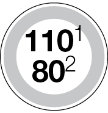
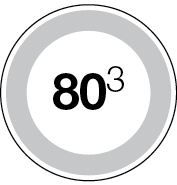
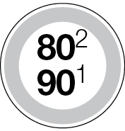
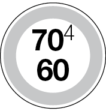

conditions de travail
1
SÉCURITÉ
E 4
1.1 HYGIÈNE ET SÉCURITÉ
L’exercice d’une profession expose les salariés à des maladies professionnelles ou à des accidents du travail.
Les pouvoirs publics et les organismes de Sécurité sociale ont édicté des mesures de prévention, qu’ils s’attachent à perfectionner et à compléter compte tenu des techniques en constante évolution.
Des services spécialisés, tels que l’inspection médicale du travail et l’inspection de la Sécurité sociale, contrôlent l’application de ces mesures.
Les infractions rendent leurs auteurs passibles de poursuites pénales et de sanctions administratives : cotisations supplémentaires d’assurance par exemple.
En revanche, les actions en faveur de la prévention ou de la diminution du nombre d’accidents et des cas de maladies dans une entreprise peuvent valoir à celle-ci une subvention ou des ristournes sur les cotisations.
C’est donc non seulement le devoir, mais aussi l’intérêt du chef d’entreprise, de veiller à ce qu’à tous les échelons de la hiérarchie, les salariés soient avertis des mesures de prévention applicables à leur activité et qu’ils fassent preuve de vigilance pour leur protection personnelle et celle de leurs collègues ou subordonnés.
L’ensemble des prescriptions relatives à l’hygiène et à la sécurité représente un volume considérable de textes.
1.1.1 Textes et institutions
1.1.1.1 Textes
Les obligations en matière d’hygiène et de sécurité résultent de :
– textes législatifs, décrets et arrêtés ; le texte de la quatrième partie « Santé et sécurité au travail » du Code du travail ;
– prescriptions des Caisses régionales de la Sécurité sociale ;
– dispositions de la Convention collective nationale des transports routiers et activités auxiliaires.
Un chef d’entreprise n’a généralement pas à connaître dans le détail ce foisonnement de textes. Il est toujours possible de consulter à leur sujet :
– soit l’INRS : Institut national de recherches et de sécurité pour la prévention des accidents du travail et des maladies professionnelles (65, bd Richard-Lenoir – 75011 Paris) ;
– soit une documentation précise, telle que le « Guide du transporteur » (Éditions Celse – 10, rue Léon-Cogniet 75821 Paris cedex 17) ;
– soit un conseiller compétent : en l’espèce l’inspecteur du travail, dont le rôle n’est pas uniquement répressif, mais également préventif.
Certains textes concernent les mesures générales d’hygiène et de sécurité. Par exemple : aération et nettoyage des locaux, aménagement des vestiaires, des lavabos et des douches.
D’autres textes, qui se rapportent directement à l’exploitation technique d’une entreprise de transport, demandent à être connus. Ils peuvent être classés en :
– mesures spéciales relatives à certains travaux ;
– mesures de sécurité dans un garage.
1.1.1.2 Déclaration des établissements
(C. trav., art. R. 1221-32 et R. 1221-33)
En vue d’un contrôle, toute personne qui se propose d’employer des salariés dans un établissement industriel ou commercial doit en faire la déclaration, quel que soit le nombre de travailleurs embauchés, par lettre recommandée avec accusé de réception, à l’inspecteur du travail.
Rappelons que l’adresse de ce fonctionnaire doit être affichée dans l’établissement.
1.1.1.3 Règles d’hygiène
Les dispositions réglementaires en matière d’hygiène sont reprises par l’article 13 de la Convention collective nationale des transports routiers et activités auxiliaires (Partie principale), qu’il est recommandé de consulter. Par ailleurs, la quatrième partie du Code du travail précise des dispositions en matière d’hygiène, par exemple le nombre de salariés à partir duquel la mise à disposition d’un local de restauration s’impose est de 50 (C. trav., art. R. 4228-22) ; la remise de « chèques restaurants » peut exonérer l’employeur de cette obligation.
1.1.1.4 Institutions
Comités techniques
Les activités du transport relèvent des comités techniques régionaux des transports et de la manutention qui dépendent eux-mêmes d’un comité national (Arr., 9 avr. 1968).
L’action de ces comités s’exerce aussi bien en matière de prévention qu’en matière d’étude et de classification des risques.
Services de santé au travail
Les services de santé au travail sont assurés par une équipe pluridisciplinaire de santé au travail comprenant des médecins du travail, des collaborateurs médecins, des internes en médecine du travail, des IPRP et des infirmiers qui ont pour mission, à titre exclusivement préventif :
– d’éviter toute altération de la santé des travailleurs du fait de leur travail (C. trav., art. L. 4622-2) ;
– de surveiller les conditions d’hygiène et de sécurité pratiquées dans un établissement.
Les médecins du travail procèdent notamment aux visites d’information et de prévention d’embauche (C. trav., art. R. 4624-10), aux examens périodiques, ainsi qu’aux visites de reprise.
L’organisation d’un service médical dans les entreprises importantes ou l’adhésion à un service interentreprises
est obligatoire, quel que soit l’effectif de l’établissement (voir partie D – Chapitre 1.2.4 La médecine du travail).
Conditions de travail
E 5
Comité social et économique (CSE)
Il est obligatoire dans les entreprises de 11 salariés et plus.
Le Comité social et économique (CSE) joue un rôle important dans l’évaluation et l’amélioration des conditions de travail.
Les attributions du CSE en matière de santé, de sécurité et de conditions de travail sont définies en fonction de l’effectif de l’entreprise.
Attributions du CSE dans les entreprises de 11 à 49 salariés
La délégation du personnel au CSE a pour mission de contribuer à la promotion de la santé, de la sécurité et de l’amélioration des conditions de travail dans l’entreprise.
Elle peut, à ce titre, réaliser des enquêtes en matière d’accidents du travail ou de maladies professionnelles ou à caractère professionnel.
Le CSE peut saisir l’inspection du travail de toutes les plaintes et observations relatives à l’application des dispositions légales dont elle est chargée d’assurer le contrôle. Il pourra s’agir, par exemple, du respect des règles relatives à la prévention des risques professionnels, aux règles de sécurité, à la lutte contre le harcèlement ou les discriminations, etc. Il dispose également d’un droit d’alerte en cas d’atteinte aux droits des personnes et en cas de danger grave et imminent (C. trav., art. L. 2312-59 et L. 2312-60).
Les membres de la délégation du personnel du CSE sont reçus collectivement par l’employeur ou son représentant au moins une fois par mois (C. trav., art. L. 2315-21). En cas d’urgence (par exemple à la suite d’un accident du travail ou en cas de danger grave et imminent), ils sont reçus sur leur demande.
Attributions du CSE dans les entreprises de 50 salariés
Dans ces entreprises, le Comité social et économique (CSE) dispose de moyens plus étendus.
Dans le champ de la santé, de la sécurité et des conditions de travail, le Comité social et économique (C. trav., art. L. 2312-9) :
1° Procède à l’analyse des risques professionnels auxquels peuvent être exposés les travailleurs, notamment les femmes enceintes, ainsi que des effets de l’exposition aux facteurs de risques professionnels (C. trav., art. L. 4161-1) liés à la prévention de la pénibilité (par exemple : manutentions manuelles de charges).
2° Contribue notamment à faciliter l’accès des femmes à tous les emplois, à la résolution des problèmes liés à la maternité, l’adaptation et à l’aménagement des postes de travail afin de faciliter l’accès et le maintien des personnes handicapées à tous les emplois au cours de leur vie professionnelle.
3° Peut susciter toute initiative qu’il estime utile et proposer notamment des actions de prévention du harcèlement moral, du harcèlement sexuel et des agissements sexistes (C. trav., art. L. 1142-2-1). Le refus de l’employeur doit alors être motivé.
Le CSE formule, à son initiative, et examine, à la demande de l’employeur, toute proposition de nature à améliorer les conditions de travail, d’emploi et de formation professionnelle des salariés, leurs conditions de vie dans l’entreprise ainsi que les conditions dans lesquelles ils bénéficient de garanties collectives complémentaires (garanties incapacité - invalidité – décès, primes de départ en retraite ou de fin de carrière) (C. trav., art. L. 2312-12).
Le CSE procède, à intervalles réguliers, à des inspections en matière de santé, de sécurité et des conditions de travail. Il réalise des enquêtes en matière d’accidents du travail ou de maladies professionnelles ou à caractère professionnel. Le Comité peut faire appel à titre consultatif et occasionnel au concours de toute personne de l’entreprise qui lui paraîtrait qualifiée (C. trav., art. L. 2312-13).
Le CSE doit être ponctuellement consulté en cas d’aménagement important modifiant les conditions de santé et de sécurité ou les conditions de travail (C. trav., art. L. 2312-8).
Lors des visites de l’agent de contrôle de l’inspection du travail, les membres de la délégation du personnel au CSE sont informés de sa présence par l’employeur et peuvent lui présenter leurs observations. L’agent de contrôle se fait accompagner par un membre de la délégation du personnel du comité, si ce dernier le souhaite.
Commission santé, sécurité et conditions de travail (CSSCT)
Dans les entreprises ou établissements de 300 salariés et plus, une Commission santé, sécurité et conditions de travail (CSSCT) doit être mise en place. Une telle commission peut également être mise en place à titre facultatif (C. trav., art. L. 2315-36). La commission exerce, par délégation du CSE, tout ou partie des attributions du Comité (par exemple les enquêtes mentionnées ci-dessous) relatives à la santé, à la sécurité et aux conditions de travail, à l’exception du recours à un expert et des attributions consultatives du Comité.
1.1.2 Sécurité du personnel
1.1.2.1 Risques professionnels
Les entreprises de transport routier sont, quel que soit leur effectif et comme toutes les autres entreprises, soumises à des obligations générales en matière de prévention des risques professionnels. Elles résultent des articles L. 4121-1 à L. 4121-5 du Code du travail qui posent quatre grands principes.
L’employeur doit :
– prendre les mesures nécessaires pour assurer la sécurité et protéger la santé physique et mentale des travailleurs (actions de prévention des risques professionnels, d’information et de formation, mise en place d’une organisation et de moyens adaptés). Il veille à l’adaptation de ces mesures pour tenir compte du changement des circonstances et tendre à l’amélioration des situations existantes (C. trav., art. L. 4121-1) ;
SÉCURITÉ
E 6
– mettre en œuvre les mesures de prévention suivantes (C. trav., art. L. 4121-2) :
1) éviter les risques ;
2) évaluer les risques qui ne peuvent pas être évités ;
3) combattre les risques à la source ;
4) adapter le travail à l’homme, en particulier en ce qui concerne la conception des postes de travail ainsi que le choix des équipements de travail et des méthodes de travail et de production, en vue notamment de limiter le travail monotone et le travail cadencé et de réduire les effets de ceux-ci sur la santé ;
5) tenir compte de l’état d’évolution de la technique ;
6) remplacer ce qui est dangereux par ce qui n’est pas dangereux ou par ce qui est moins dangereux ;
7) planifier la prévention en y intégrant, dans un ensemble cohérent, la technique, l’organisation du travail, les conditions de travail, les relations sociales et l’influence des facteurs ambiants, notamment en ce qui concerne les risques liés au harcèlement moral et au harcèlement sexuel, ainsi que ceux liés aux agissements sexistes, tels qu’ils sont définis aux articles L. 1152-1, L. 1153-1 et L. 1142-2-1 du Code du travail ;
8) prendre des mesures de protection collective en leur donnant la priorité sur les mesures de protection individuelle ;
9) donner les instructions appropriées aux travailleurs ;
– évaluer les risques pour la santé et la sécurité des travailleurs, y compris dans le choix des équipements de travail, dans l’aménagement ou le réaménagement des lieux de travail ou des installations et dans la définition des postes de travail ; à la suite de cette évaluation et en fonction du besoin, les actions de prévention ainsi que les méthodes de travail doivent garantir un meilleur niveau de protection de la sécurité et de la santé des travailleurs et être intégrées dans l’ensemble des activités de l’établissement et à tous les niveaux de l’encadrement ;
– lorsqu’il confie des tâches à un travailleur, prendre en considération les capacités de l’intéressé à mettre en œuvre les précautions nécessaires pour la sécurité et la santé.
Le décret n° 2022-395 du 18 mars 2022, entré en vigueur le 31 mars 2022, précise les règles d’élaboration, de mise à jour, de conservation et de mise à disposition du document unique d’évaluation des risques professionnels. Il modifie notamment les obligations en matière de mise à jour du document unique pour les entreprises de moins de 11 salariés. Il impose la révision du programme annuel de prévention des risques professionnels et d’amélioration des conditions de travail ou de la liste des actions de prévention et de protection à chaque mise à jour du document unique.
Il précise les modalités de prise en charge de la formation nécessaire à l’exercice des missions en matière de santé, de sécurité et de conditions de travail des membres de la délégation du personnel du comité social et économique et du référent en matière de lutte contre le harcèlement sexuel et les agissements sexistes pour les entreprises de moins de cinquante salariés par l’opérateur de compétences. Le document est tenu à la disposition des représentants du personnel (à défaut d’instances représentatives, à la disposition des salariés) et à celle de l’inspecteur du travail, du médecin du travail et des services de prévention des organismes de Sécurité sociale. L’absence de document unique ou le fait de ne pas mettre à jour constitue une contravention de 5e classe (C. trav., art. R. 4741-1).
1.1.2.1.1 Établissement du document unique
Le document unique est nécessairement un écrit, établi par le chef d’entreprise, sous sa responsabilité. Une démarche en 5 phases doit être mise en place pour assurer son élaboration :
Phase 1 Préparation et définition de la méthodologie de travail, recours aux compétences internes et externes.
Phase 2 évaluation des risques en procédant à un inventaire identifiant les dangers des équipements, des méthodes de travail, de l’aménagement des lieux de travail, et en appréciant le degré de risque potentiel.
Phase 3 élaboration d’un programme d’action, à partir d’une hiérarchisation des risques en précisant les mesures envisagées et leur calendrier de réalisation.
Phase 4 Mise en œuvre du programme d’action.
Phase 5 Réévaluation des risques après réalisation du programme d’action.
1.1.2.1.2 Prise en compte des risques
La réglementation vise l’analyse des risques pour chaque « unité de travail » de l’entreprise. Par unité de travail, il convient d’entendre les postes et/ou situations de travail présentant les mêmes caractéristiques, un tel regroupement permettant d’ailleurs au chef d’entreprise de circonscrire l’évaluation des risques professionnels.
Dans l’entreprise de transport de marchandises et de la logistique, il y a lieu de dissocier les grands types de postes suivants (sans que cette liste prétende à l’exhaustivité) :
– services administratifs ;
– manutention quais et entrepôts, engins de manutention ;
– atelier, garage ;
– conduite.
Concernant les postes de travail et les équipements relatifs à la conduite, l’utilisation de véhicules spécialisés (bennes, citernes, températures dirigées, porte-voitures, grues…) doit faire l’objet d’un examen particulier au regard des risques spécifiques qu’elle est susceptible de provoquer.
1.1.2.2 Mesures spéciales à certains travaux
Transport par route
b Aménagement et équipement des véhicules.
par exemple
– interdiction des équipements non indispensables au point de vue technique ou dont l’emplacement ou la forme serait susceptible d’aggraver, en cas de collision, les accidents corporels ;
Conditions de travail
E 7
– prévention des infiltrations de fumées, vapeurs ou gaz à l’intérieur des cabines ;
– obligation d’un extincteur d’incendie d’un type agréé et d’une trousse de premier secours (l’article R. 4224-14 du Code du travail oblige les lieux de travail à être équipés d’un matériel de secours adapté à la nature des risques et facilement accessible. Un véhicule utilisé à des fins professionnelles peut être considéré comme un lieu de travail et donc, répond aux mêmes obligations légales).
b Périodicité des visites techniques obligatoires par des centres agréés : tous les ans pour les véhicules de transport de marchandises de plus de 3,5 t de PTAC.
b Conditionnement du chargement :
– fixation et signalisation des chargements débordants ;
– fixation des accessoires « flottants » : chaînes, bâches, etc. ;
– respect du poids total maximal autorisé en charge ainsi que de la répartition à l’intérieur des véhicules (charges à l’essieu, charges sur deux essieux consécutifs…).
Manutention et stockage
b Limitation des charges portées par les ouvriers.
b Utilisation d’appareils de levage : grues, ascenseurs et monte-charges.
b Remplacement des crics et chandelles par des ponts élévateurs pour l’entretien des véhicules roulants.
b Stockage des produits nocifs dans des locaux et récipients appropriés, avec étiquetage réglementaire.
Travaux de réparation
b Montage et démontage des pneumatiques
Le montage et le démontage des pneumatiques « poids lourds » exigent certaines précautions.
En particulier :
– le démontage du pneumatique ne doit se faire qu’après dégonflage complet (même à la suite d’une crevaison), en retirant l’obus de la valve ;
– le gonflage du pneumatique ne doit commencer qu’une fois la roue enfermée à l’intérieur d’un dispositif ou « cage » de retenue : grille mobile ou presse de montage susceptible de contenir les parties qui pourraient être projetées en cas de rupture ; les accidents pendant le gonflage sont en effet souvent très graves.
b Les récipients ayant contenu des produits inflammables et les citernes ou réservoirs d’essence doivent être soigneusement « dégazés » avant tout travail à la flamme tel que soudage ou brasage.
b Pour l’emploi des machines-outils :
– lunettes épaisses pare-éclats pour poncer, meuler et frapper ;
– paravent amovible, incombustible et non réfléchissant pour souder à l’arc ;
– gants isolants pour les acides et l’électricité ;
– masques filtrants pour les poussières et la peinture au pistolet ;
– vêtements ajustés pour éviter d’être happé par les machines, les courroies, etc. ;
– écrans pare-éclats et étincelles ;
– mesures de sécurité particulières à l’emploi des différents moyens de soudage ;
– banc d’essai de moteur : la teneur importante des gaz d’échappement en oxyde de carbone exige soit une aération parfaite des locaux où l’on fait tourner les moteurs, soit un orifice d’évacuation des gaz d’échappement vers l’extérieur.
1.1.2.3 Sécurité dans un garage
Outre les mesures générales ou spéciales énumérées dans les paragraphes précédents, un certain nombre de mesures particulièrement importantes sont destinées à assurer la sécurité dans un garage-atelier. Elles concernent principalement :
– la prévention et la lutte contre l’incendie ;
– les installations électriques ;
– l’organisation des fosses de visite.
b Prévention et lutte contre l’incendie
La présence dans les garages de produits aussi inflammables que l’essence, le gazole et les lubrifiants commande un certain nombre de mesures de sécurité pour prévenir et combattre les incendies :
Limiter les quantités de produits et matériaux inflammables dans l’atelier :
– pas d’essence en récipient ouvert à l’air libre ;
– nettoyage des pièces avec un produit adapté (non inflammable si possible) ;
– propreté des sols : dégraissage avec des produits spéciaux excluant l’essence ;
– ramassage des chiffons gras dans des récipients métalliques avec couvercle.
Prévenir la possibilité d’inflammation ou d’explosion :
– interdiction de fumer ;
– interdiction d’emploi d’appareils ou lampes à flamme nue ; l’emploi des ponceuses et appareils de soudage ne doit être autorisé qu’avec certaines précautions, notamment en ce qui concerne l’aération.
Lutter contre le feu : les consignes d’incendie doivent être connues de tous et affichées. Le matériel de défense contre l’incendie comprend les extincteurs, les robinets d’incendie armés, d’installations de détection automatique d’incendie, le sable, les couvertures ignifugées… (C. trav., art. R. 4227-29 à R. 4227-33).
Extincteurs de garage : ils doivent être situés de telle manière qu’ils soient facilement accessibles (dégagement des abords) et maintenus constamment en état de fonctionnement. On distingue :
– extincteurs à mousse : à manipuler avec précautions pour éviter le mélange prématuré des deux solutions ; ces extincteurs ne doivent pas être utilisés sur les feux d’origine électrique ;
– extincteurs à neige carbonique : à utiliser pour les feux d’origine électrique ;
– extincteurs à poudre : ceux-ci peuvent être employés dans tous les cas ;
– extincteurs à eau : ces appareils ne doivent être utilisés ni sur les feux d’hydrocarbures, ni sur les feux d’origine électrique.
SÉCURITÉ
E 8
Consignes d’emploi des extincteurs
b La manœuvre des extincteurs doit être parfaitement connue de tout le personnel, afin de permettre une intervention immédiate. Des exercices périodiques sont à organiser.
b Les extincteurs doivent être vérifiés tous les ans (norme NF S 61-919).
b Le jet de l’extincteur doit attaquer la base du foyer d’incendie.
b Il ne faut jamais envoyer d’eau sur les carburants enflammés, car ceux-ci, étant plus légers, surnagent sans pour cela s’éteindre et risquent ainsi de propager l’incendie.
b L’emploi du tétrachlorure de carbone et du bromure de méthyle est interdit à cause de leur toxicité.
Sable : il permet d’éteindre une nappe mince de produits brûlant au sol et d’endiguer les produits répandus accidentellement. Il est indispensable d’en prévoir, avec des pelles pour l’étendre.
Couvertures ignifugées : elles sont à prévoir pour porter secours à une personne dont les vêtements sont enflammés.
En tel cas, il faut rouler la victime dans une de ces couvertures ou à défaut sur le sol pour éteindre les flammes.
b Installations et matériels électriques
L’installation électrique doit être vérifiée régulièrement par des techniciens de l’entreprise dûment qualifiés ou par des vérificateurs agréés (C. trav., art. R. 4323-23 et s.).
Les accidents par électrocution sont relativement fréquents avec des courants à basse tension (220 volts). Ce danger est particulièrement grand :
– dans les locaux humides : emplacements de lavage par exemple ;
– quand les mains ou les chaussures sont humides ;
– lorsqu’on est en transpiration ;
– lorsqu’on utilise un outillage électrique portable, à simple isolement.
Installations fixes
Toute installation électrique qui n’est pas réalisée convenablement est dangereuse : risque d’électrocution et d’incendie. Les normes en vigueur sont connues des installateurs.
Voici quelques points importants à surveiller :
– installation sous tube ;
– interrupteurs, fusibles et prises étanches ;
– ampoules et tubes sous verres étanches et grilles de protection ;
– disjoncteur particulier et accessible auprès de chaque machine-outil ;
– prises de terre ;
– aération du local de charge des accumulateurs, à cause du risque d’explosion.
Appareils portatifs ou amovibles
b Baladeuses
Les lampes baladeuses doivent être normalement alimentées en 24 volts.
b Perceuses-ponceuses
S’ils ne sont pas alimentés en très basse tension ou du type « à double isolement », les appareils électriques amovibles doivent comporter une prise de terre.
Le double isolement est signalé sur l’appareil par le signe (deux carrés l’un dans l’autre).
b Prise de terre
La mise à la terre est réalisée par un conducteur reliant le châssis ou l’enveloppe de l’appareil électrique avec la terre.
Le fil de prise de terre est relié soit à une barre de cuivre enfoncée profondément en terre, soit à un treillis métallique disposé à au moins un mètre en terre. Si, par suite d’un accident (rupture d’une soudure, desserrage d’un branchement, usure d’un isolant), un court-circuit se produit entre le fil sous tension et le bâti ou le châssis de l’appareil, le courant peut s’écouler par la prise de terre sans risque pour l’utilisateur.
La prise de terre est d’autant plus efficace qu’elle permet un meilleur écoulement dans le sol du courant susceptible de la parcourir. Il y a donc intérêt à ce qu’elle soit installée en terrain humide.
Il ne faut pas confondre la « mise à la terre », qui constitue la mesure de protection, avec la « mise à la masse » des appareils électriques d’un véhicule. Dans ce dernier cas, la masse est constituée par le châssis du véhicule et joue en fait le rôle de fil de retour du courant à la batterie d’accumulateurs.
b Fosses pour visites, entretien, réparations
Risques
Dans les installations nouvelles, la construction des fosses de visite en sous-sol est déconseillée. Il est recommandé au contraire de s’orienter vers la pratique des travaux au-dessus du sol.
Les fosses anciennement installées ou nouvellement aménagées, malgré la recommandation de l’Institut national de sécurité, comportent 3 risques principaux :
– risque de chute pour le personnel quand elles ne sont pas utilisées ;
– risque, plus grave encore, d’explosion causée par les vapeurs d’essence qui peuvent s’y accumuler ;
– risque d’asphyxie par l’oxyde de carbone qui peut y stagner.
Mesures de sécurité
b Hors période d’utilisation, mise en place d’un plancher amovible, ou d’un garde-corps sur les côtés latéraux avec des chaînes en bout.
b En tout temps :
– ne jamais utiliser d’essence dans la fosse ;
– tenir les fosses parfaitement propres ;
– réaliser une installation d’éclairage étanche et protégée (antidéflagrante) ;
– assurer la ventilation permanente en cours d’utilisation.
Nota : voir sur le site « www.inrs.fr » les différentes recommandations pour les rénovations et/ou installations de fosses de visite pour véhicules (réf. Brochure R. 468 et R. 469).
Conditions de travail
E 9
1.2 droit d’alerte et de retrait
b En cas d’atteinte aux droits des personnes (C. trav., art. L.. 2312-59)
Si un membre de la délégation du personnel au comité social et économique constate, notamment par l’intermédiaire d’un travailleur, qu’il existe une atteinte aux droits des personnes, à leur santé physique et mentale ou aux libertés individuelles dans l’entreprise qui ne serait pas justifiée par la nature de la tâche à accomplir, ni proportionnée au but recherché, il en saisit immédiatement l’employeur.
Cette atteinte peut notamment résulter de faits de harcèlement sexuel ou moral ou de toute mesure discriminatoire en matière d’embauche, de rémunération, de formation, de reclassement, d’affectation, de classification, de qualification, de promotion professionnelle, de mutation, de renouvellement de contrat, de sanction ou de licenciement.
L’employeur alerté doit procéder sans délai à une enquête avec le membre de la délégation du personnel du comité et prendre les dispositions nécessaires pour remédier à cette situation.
b En cas de danger grave et imminent (C. trav., art. L. 2312-60, L. 4132-1 à L. 4132-5 et L. 4133-1 à L. 4133-4)
Lorsqu’un membre de la délégation du personnel au comité social et économique alerte l’employeur d’un danger grave et imminent, il consigne son avis par écrit dans des conditions déterminées par voie réglementaire.
L’employeur doit prendre les mesures et donner les instructions nécessaires pour permettre aux travailleurs, en cas de danger grave et imminent, d’arrêter leur activité et de se mettre en sécurité en quittant immédiatement le lieu de travail.
L’employeur doit procéder immédiatement à une enquête avec le représentant du personnel au CSE qui lui a signalé le danger et prendre les dispositions nécessaires pour y remédier.
En cas de divergence sur la réalité du danger ou la façon de le faire cesser, notamment par arrêt du travail, de la machine ou de l’installation, le CSE est réuni d’urgence, dans un délai n’excédant pas vingt-quatre heures.
L’employeur informe immédiatement l’agent de contrôle de l’inspection du travail et l’agent du service de prévention de la caisse régionale d’assurance maladie, qui peuvent assister à la réunion du comité.
À défaut d’accord entre l’employeur et la majorité du comité sur les mesures à prendre et leurs conditions d’exécution, l’inspecteur du travail est saisi immédiatement par l’employeur.
b Droit d’alerte économique (C. trav., art. L. 2312-63 à L. 2312-69)
Lorsque le CSE a connaissance de faits de nature à affecter de manière préoccupante la situation économique de l’entreprise, il peut demander à l’employeur de lui fournir des explications. Cette demande est inscrite de droit à l’ordre du jour de la prochaine séance du comité.
Si le comité n’a pu obtenir de réponse suffisante de l’employeur ou si celle-ci confirme le caractère préoccupant de la situation, il établit un rapport. Pour l’établissement de ce rapport, le comité social et économique peut se faire assister d’un expert-comptable et convoquer le commissaire aux comptes de l’entreprise. Il peut également s’adjoindre deux salariés de l’entreprise, extérieurs au CSE, choisis pour leur compétence.
Ce rapport, au titre du droit d’alerte économique, est transmis à l’employeur et au commissaire aux comptes. Le CSE peut également décider de saisir de ses conclusions l’organe chargé de l’administration ou de la surveillance dans les sociétés ou personnes morales qui en sont dotées, ou d’en informer les associés dans les autres formes de sociétés ou les membres dans les groupements d’intérêt économique.
b Droit d’alerte sociale (C. trav., art. L. 2312-70 et L. 2312-71)
Lorsque le nombre des salariés titulaires d’un contrat de travail à durée déterminée et le nombre de salariés temporaires font l’objet d’un accroissement important par rapport à la situation existant lors de la dernière réunion du comité social et économique ayant abordé ce sujet, l’examen de cette question est inscrit de plein droit à l’ordre du jour de la prochaine réunion ordinaire du comité si la majorité des membres du comité le demande.
Lors de cette réunion ordinaire, l’employeur communique au comité le nombre de salariés titulaires d’un contrat de travail à durée déterminée et de salariés temporaires, les motifs l’ayant amené à y recourir ainsi que le nombre des journées de travail accomplies par les intéressés depuis la dernière communication faite à ce sujet.
Lorsque le CSE a connaissance de faits susceptibles de caractériser un recours abusif aux contrats de travail à durée déterminée, aux contrats conclus avec une entreprise de portage salarial et au travail temporaire, ou lorsqu’il constate un accroissement important du nombre de salariés titulaires de contrats de travail à durée déterminée et de contrats de mission, il peut saisir l’agent de contrôle de l’inspection du travail. Celui-ci adresse alors à l’employeur le rapport de ses constatations.
L’employeur communique ce rapport au CSE en même temps que sa réponse motivée aux constatations de l’agent de contrôle de l’inspection du travail.
Dans sa réponse, l’employeur doit préciser, en tant que de besoin, les moyens qu’il met en œuvre pour limiter le recours à ces formes de contrats de travail.
personnel de conduite
2
SÉCURITÉ
E 12
2.1 PERMIS DE CONDUIRE
Il existe des catégories de permis différentes selon :
– le poids total autorisé en charge des véhicules ;
– la constitution d’ensembles de véhicules couplés.
Le permis selon sa catégorie peut être temporaire ou permanent.
2.1.1 Catégories de permis
(C. route, art. R. 221-1 à R. 221-21)
Pour le transport de marchandises les catégories de permis concernés sont B, BE, B1, C1, C1E, C et CE.
Le décret n° 2011-1475 du 9 novembre 2011 transposant la directive n° 2006/126/CE définit des nouvelles conditions d’obtention du permis de conduire et de durée limitée de validité du titre. Ces dispositions sont entrées en vigueur le 19 janvier 2013. Les nouveaux permis de conduire sont délivrés sous une nouvelle forme, proche de la carte d’identité.
2.1.1.1 Permis de catégorie B
b Permis B
Le permis B autorise la conduite de véhicules dont le poids total autorisé en charge n’excède pas 3,5 t (voitures, camionnettes).
Aux véhicules de cette catégorie peut être attelée une remorque, dont le PTAC est inférieur ou égal à 750 kg.
remarque
Permis B (code 96)
La catégorie B du permis de conduire autorise également la conduite des véhicules de la catégorie B attelés d’une remorque lorsque le Poids total autorisé en charge (PTAC) de la remorque excède 750 kg et lorsque la somme des Poids totaux autorisés en charge (PTAC) du véhicule tracteur et de la remorque est supérieure à 3 500 kg, mais ne dépasse pas 4 250 kg sous réserve que le titulaire du permis ait suivi une formation dont les modalités sont définies par arrêté du ministre chargé de la Sécurité routière (Arr., 17 janv. 2013).
b Permis BE
Véhicules relevant de la catégorie B auxquels est attelée une remorque ou une semi-remorque qui a un Poids total autorisé en charge (PTAC) n’excédant pas 3 500 kg.
L’âge minimal pour passer le permis B et BE est 18 ans révolus.
b Permis B1
Le permis B1 autorise la conduite de tricycles à moteur dont la puissance n’excède pas 15 kW et dont le poids à vide n’excède pas 550 kg ainsi que les quadricycles lourds à moteur.
L’âge minimal pour passer le permis B1 est 16 ans révolus.
Les permis de conduire comportant les catégories B, B1 et BE du permis de conduire ont une durée de validité de 15 ans à compter de leur délivrance (C. route, art. R. 221-1-1).
2.1.1.2 Permis de catégorie C
b Permis C1
Le permis C1 autorise la conduite des véhicules ayant un PTAC supérieur à 3,5 t sans excéder 7,5 t.
Aux véhicules de cette catégorie peut être attelée une remorque ou d’une semi-remorque dont le poids total autorisé en charge n’excède pas 750 kg.
L’âge minimal pour passer le permis C1 est de 18 ans révolus.
b Permis C1E
Le permis C1E autorise la conduite des véhicules ayant un PTAC supérieur à 3,5 t sans excéder 7,5 t attelés d’une remorque ou d’une semi-remorque dont le poids total autorisé en charge excède 750 kg.
Le PTRA des ensembles de véhicules de la catégorie C1E ne peut excéder 12 t.
L’âge minimal pour passer le permis C1E est de 18 ans révolus.
Un conducteur-trice « professionnel-le » doit non seulement être titulaire d’un permis de conduire mais posséder une qualification professionnelle et connaître les mesures à prendre en cas d’accident.
Personnel de conduite
E 13
b Permis C
Le permis C autorise la conduite de véhicules isolés dont le poids total autorisé en charge excède 3,5 t.
Aux véhicules de cette catégorie peut être attelée une remorque dont le poids total autorisé en charge n’excède pas 750 kg.
L’âge minimal pour passer le permis C est 21 ans révolus.
b Permis CE
Le permis CE autorise la conduite de véhicules relevant de la catégorie C attelés d’une remorque ou d’une semi-remorque dont le Poids total autorisé en charge (PTAC) excède 750 kg.
L’âge minimal pour passer le permis CE est 21 ans révolus.
L’article R. 3314-4 du Code des transports précise que l’obtention d’une qualification initiale obtenue soit à l’issue d’une formation professionnelle de 280 h, sanctionnée par l’obtention d’un titre professionnel de conduite routière ou soit par équivalence de titre ou diplôme (Arr., 26 fév. 2008), permet à son titulaire de conduire, dès l’âge de 18 ans, les véhicules pour la conduite desquels un permis de conduire des catégories C ou CE est requis.
Le permis C1, C1E, C et CE, ne sont pas permanents ; la prorogation de leur validité se fait après examen médical (C. route, art. R. 221-11) :
– tous les 5 ans pour les conducteurs de moins de 60 ans ;
– tous les 2 ans pour les conducteurs de 60 à 75 ans ;
– tous les ans pour les conducteurs âgés de plus de 75 ans.
2.1.1.3 RECONNAISSANCE ET ÉCHANGE DES PERMIS
Les articles R. 222-1 à R. 222-3 du Code de la route fixent les conditions de reconnaissance et d’échange des permis de conduire délivrés par :
– les États appartenant à l’Union européenne et à l’Espace économique européen ;
– les États n’appartenant ni à l’Union européenne ni à l’Espace économique européen.
2.1.2 Permis à points
b Principe de fonctionnement
Le permis de conduire est affecté d’un nombre maximal de 12 points.
Depuis 2004, à la date d’obtention du permis de conduire, celui-ci est affecté de la moitié du nombre maximal de points, soit 6 points. Il est fixé un délai probatoire de 3 ans.
Au terme de chaque année de ce délai probatoire, le permis est majoré de 2 points si aucune infraction ayant donné lieu à un retrait de points n’a été commise depuis le début de la période probatoire. Lorsque le titulaire du permis de conduire a suivi un apprentissage anticipé de la conduite, ce délai probatoire est réduit à 2 ans et cette majoration est portée à 3 points.
|
Reconnaissance et échange des permis de conduire français (C. route, art. R. 222-1 à R. 222-3) |
|||||
|
Origine du permis |
Lieu de résidence |
Reconnaissance |
Échange pour un permis de conduire |
||
|
Possible |
Obligatoire |
||||
|
Union européenne |
France |
Oui |
Oui |
Lorsque son titulaire a commis, |
|
|
Espace économique |
France |
Oui |
Oui |
||
|
État de l’Union ou |
France |
Oui pendant 1 an3 |
Au bout de 1 an |
||
|
Autre état |
Accord de |
France |
Oui pendant 1 an3 |
Au bout de 1 an |
|
|
Autre |
France |
Oui pendant 1 an3 |
Non |
||
1. La reconnaissance des permis de conduire est subordonnée au respect des conditions d’âges, médicales et administratives.
2. L’Espace économique européen comprend les 27 pays de l’Union européenne, le Liechtenstein, la Norvège et l’Islande.
3. Après l’acquisition de la résidence normale en France de son titulaire.
SÉCURITÉ
E 14
Le délai probatoire est en outre réduit d’une année (2 ans au lieu de 3) pour le titulaire d’un premier permis de conduire qui se soumet à une formation complémentaire (formation suivie entre le 6e et le 12 mois après l’obtention du permis de conduire) et ne commet durant ce délai aucune infraction, avec majoration de 2 points 1 an après l’obtention du permis puis le solde maximum de points 1 an plus tard.
Si le titulaire du permis de conduire a bénéficié de l’apprentissage anticipé de la conduite et a suivi la formation complémentaire, le délai probatoire est de 18 mois, avec majoration de 3 points au bout d’un an puis 12 points 6 mois plus tard (C. route, art. R. 223-1).
Lors de la constatation d’une infraction entraînant retrait de points, l’auteur de celle-ci est informé qu’il encourt un retrait de points si la réalité de l’infraction est établie dans les conditions définies à l’article L. 223-1 du Code de la route. Cet article précise que la réalité d’une infraction entraînant retrait de points est établie par :
– le paiement d’une amende forfaitaire ;
– l’émission du titre exécutoire de l’amende forfaitaire majorée ;
– l’exécution d’une composition pénale ;
– ou par une condamnation définitive.
Lorsqu’il est fait application de la procédure de l’amende forfaitaire ou de la procédure de composition pénale, l’auteur de l’infraction est informé que le paiement de l’amende ou l’exécution de la composition pénale entraîne le retrait du nombre de points correspondant à l’infraction reprochée, dont la qualification est dûment portée à sa connaissance ; il est également informé de l’existence d’un traitement automatisé de ces points et de la possibilité pour lui d’exercer le droit d’accès.
Le retrait de points est porté à la connaissance de l’intéressé par lettre simple, ou sur sa demande par voie électronique, quand il est effectif (C. route, art. L. 223-3).
Depuis le 1er janvier 2017, les personnes morales sont tenues de communiquer l’identité des auteurs d’infractions routières commises au moyen de véhicules immatriculés à leur nom. Les mêmes dispositions s’appliquent aux personnes physiques ayant immatriculés le véhicule en tant que personne morale. À défaut, le représentant légal se verra infliger une amende qui viendra s’ajouter à celle encourue au titre de sa responsabilité pénale ou pécuniaire (C. route, art. L. 121-6).
Pour les délits, le retrait de points est égal à la moitié du nombre maximal de points.
Pour les contraventions, le retrait de points est, au plus, égal à la moitié du nombre maximal de points.
Dans le cas où plusieurs infractions entraînant retrait de points sont commises simultanément, les retraits de points se cumulent dans la limite des deux tiers du nombre maximal de points, soit 8 points pour les permis affectés de 12 points (C. route, art. L. 223 -2).
Les informations relatives au nombre de points détenus par le titulaire d’un permis de conduire ne peuvent être collectées que par les autorités administratives et judiciaires, à l’exclusion des employeurs, assureurs et toutes autres personnes physiques ou morales (C. route, art. L. 223-7).
Si le retrait de points aboutit à un nombre nul de points affectés au permis de conduire, l’auteur de l’infraction est informé par le ministre de l’Intérieur par lettre recommandée avec demande d’avis de réception du nombre de points retirés. Cette lettre récapitule les précédents retraits ayant concouru au solde nul, prononce l’invalidation du permis de conduire et enjoint à l’intéressé de restituer celui-ci au préfet du département de son lieu de résidence dans un délai de 10 jours francs à compter de sa réception (C. route, art. R. 223-3).
Nota (C. route, art. R. 225-6) : tout conducteur peut connaître le solde de points de son permis par le biais du téléservice « Mes Permis Points» accessible depuis le site internet du ministère de l’Intérieur (https://tele7.interieur.gouv.fr/tlp/).
2.1.2.1 Délits (entraînant un retrait de 6 points) :
– homicide ou blessures involontaires commis à l’occasion de la conduite d’un véhicule à moteur ;
– conduite et accompagnement d’un élève conducteur avec un taux d’alcoolémie égal ou supérieur à 0,8 g par litre de sang ;
– toute personne qui conduit un véhicule ou qui accompagne un élève conducteur alors qu’il résulte d’une analyse sanguine qu’elle a fait usage de substances ou plantes classées comme stupéfiants ;
– conduite avec une alcoolémie supérieure ou égale à 0,8 g par litre de sang ou en état d’ivresse ;
– refus de se soumettre aux tests de dépistage d’alcoolémie ;
– délit de fuite ;
– refus d’obtempérer, d’immobiliser le véhicule, et de se soumettre aux vérifications ;
– entrave ou gêne à la circulation ;
– usage volontaire de fausses plaques d’immatriculation, défaut volontaire de plaques et fausses déclarations ;
– conduite en période de suspension du permis ;
– conduite sous l’influence de substances ou plantes classées comme stupéfiants ;
– refus de se soumettre aux tests de dépistage de stupéfiants ;
– récidive de « grand excès de vitesse » (50 km/h ou plus) ;
– refus de restituer un permis suspendu ou annulé ;
– obtention (ou tentative d’obtention) d’un permis de conduire par fausse déclaration ;
– récidive de « non-respect de la distance de sécurité dans un tunnel » ;
– à partir du 1er janvier 2024, il est prévu de créer de nouveaux délits, tel que l'homicide routier.
L’un de ces délits entraîne un retrait de 6 points.
b Peine encourue
La loi n° 2003-495 du 12 juin 2003 prévoit l’aggravation de la répression des atteintes involontaires à la vie ou à l’intégrité de la personne commises à l’occasion de la conduite d’un véhicule. Ainsi tout accident corporel devient un délit, son auteur est donc passible d’une peine de prison.
Personnel de conduite
E 15
Lorsque le conducteur d’un véhicule terrestre à moteur commet une faute de maladresse, d’imprudence, d’inattention ou un manquement à une obligation législative ou réglementaire de sécurité ou de prudence prévu par les articles 221-6, 222-19-1 et 222-20-1 du Code pénal, celui-ci sera puni de :
– 5 ans d’emprisonnement et 75 000 € d’amende pour les cas d’homicides involontaires ;
– 3 ans d’emprisonnement et 45 000 € d’amende pour les cas de blessures involontaires ayant entraîné une incapacité totale de travail supérieure à 3 mois ;
– 2 ans d’emprisonnement et 30 000 € d’amende pour les cas de blessures involontaires ayant entraîné une incapacité totale de travail inférieure ou égale à 3 mois.
Une deuxième augmentation des peines est prévue lorsque les faits sont commis avec l’une des 6 circonstances aggravantes suivantes, qui constituent une faute d’une particulière gravité (C. pén., art. 221-6-1) :
– mise en danger délibérée de la vie d’autrui ;
– conduite sous l’empire d’un état alcoolique ou refus de se soumettre aux vérifications du taux d’alcoolémie ;
– conduite après usage de produits stupéfiants ou refus de se soumettre aux vérifications ;
– conduite sans permis de conduire (qu’il s’agisse de conduite sans permis, ou de conduite avec un permis annulé, suspendu ou invalidé) ;
– vitesse de plus de 50 km/h au-dessus des limites autorisées ;
– délit de fuite.
Les peines sont portées à :
– 7 ans d’emprisonnement et 100 000 € d’amende pour les cas d’homicides involontaires ;
– 5 ans d’emprisonnement et 75 000 € d’amende pour les cas de blessures involontaires ayant entraîné une incapacité totale de travail supérieure à 3 mois ;
– 3 ans d’emprisonnent et 45 000 € d’amende pour les cas de blessures involontaires ayant entraîné une incapacité totale de travail inférieure ou égale à 3 mois.
Les peines sont à nouveau aggravées si sont réunies au moins deux circonstances aggravantes pour s’élever à :
– 10 ans d’emprisonnement et 150 000 € d’amende en cas d’homicide involontaire ;
– 7 ans d’emprisonnement et 100 000 € d’amende en cas de blessures involontaires ayant entraîné une incapacité totale de travail supérieure à 3 mois ;
– 5 ans d’emprisonnement et 75 000 € d’amende en cas de blessures involontaires ayant entraîné une incapacité totale de travail inférieure ou égale à 3 mois.
2.1.2.2 Contraventions
b Contraventions entraînant un retrait de 6 points :
– conduite et accompagnement d’un élève conducteur avec un taux d’alcoolémie compris entre 0,5 et 0,8 g par litre de sang ;
– le fait de détenir ou de transporter un appareil, dispositif ou produit de nature ou présenté comme étant de nature à déceler la présence ou perturber le fonctionnement d’appareils, instruments ou systèmes servant à la constatation des infractions à la législation ou à la réglementation de la circulation routière ou de permettre de se soustraire à la constatation desdites infractions ;
– refus de céder le passage à un piéton qui s’engage de manière régulière ;
– dépassement de 50 km/h ou plus de la vitesse maximale autorisée.
b Contraventions entraînant un retrait de 4 points :
– non-respect de la priorité ;
– non-respect de l’arrêt imposé par le panneau « stop »,
« cédez le passage » ou par le feu rouge fixe ou clignotant ;
– dépassement de la vitesse maximale autorisée compris entre 40 et moins de 50 km/h ;
– circulation la nuit ou par temps de brouillard en un lieu dépourvu d’éclairage public, d’un véhicule sans éclairage ni signalisation ;
– marche arrière ou demi-tour sur autoroute ;
– non-respect de priorité d’un véhicule prioritaire ;
– circulation en sens interdit.
b Contraventions entraînant un retrait de 3 points :
– circulation sans motif sur la partie gauche de la chaussée ;
– conduite en ayant dans son champ de vision un appareil en fonctionnement doté d’un écran et ne constituant pas une aide à la conduite ou à la navigation ;
– franchissement d’une ligne continue seule ou quand elle n’est pas doublée par une ligne continue du côté de l’usager ;
– changement de direction ou ralentir d’allure sans que le conducteur se soit assuré que la manœuvre est sans danger pour les autres usagers et sans qu’il ait averti ceux-ci de son intention ;
– dépassement de la vitesse maximale autorisée
compris entre 30 km/h et moins de 40 km/h ;
– dépassement dangereux ;
– dépassement par la droite ;
– arrêt ou stationnement dangereux ;
– stationnement sur la chaussée la nuit ou par temps de brouillard, en un lieu dépourvu d’éclairage public, d’un véhicule sans éclairage ni signalisation ;
– circulation sur la bande d’arrêt d’urgence ;
– non-respect des distances de sécurité entre véhicules ;
– défaut de port de ceinture de sécurité par le conducteur ;
– défaut de port de casque par le conducteur d’une motocyclette ;
– usage d’un téléphone tenu en main par le conducteur d’un véhicule en circulation. Le téléphone tenu en main plus une infraction supplémentaire listée par le décret n° 2020-605 peut entrainer la suspension du permis pour 6 mois maximum (C. route, art. R. 224-19-1);
– le port à l’oreille de tout dispositif susceptible d’émettre du son : écouteurs, oreillette, casque…
– vitres teintées à l’avant du véhicule à plus de 30 % ;
– non-respect des restrictions de validité du permis de conduire.
b Contraventions entraînant le retrait de 2 points :
– dépassement de la vitesse maximale autorisée compris entre 20 km/h et moins de 30 km/h ;
SÉCURITÉ
E 16
– accélération de l’allure par le conducteur d’un véhicule sur le point d’être dépassé ;
– circulation, arrêt ou stationnement sur la bande centrale séparatrice des chaussées.
b Contraventions entraînant le retrait de 1 point :
– dépassement de moins de 20 km/h de la vitesse maximale autorisée ;
– chevauchement d’une ligne continue seule ou quand elle n’est pas doublée par une ligne discontinue du côté de l’usager ;
– maintien des feux de route à la rencontre des véhicules provoquant une gêne ;
– non-respect du port des gants obligatoires à moto à la norme CE ;
– à partir du 1er janvier 2024, suite à un dépassement de vitesse de moins de 5 km/h, il n'y aura plus de retrait de point.
2.1.2.3 récupération des points sur le permis
Si le titulaire du permis de conduire n’a pas commis, dans le délai de 2 ans à compter de la date du paiement de la dernière amende forfaitaire, de l’émission du titre exécutoire de la dernière amende forfaitaire majorée, de l’exécution de la dernière composition pénale ou de la dernière condamnation définitive, une nouvelle infraction ayant donné lieu au retrait de points, son permis est affecté du nombre maximal de points. Cette disposition n’est pas applicable au conducteur en période probatoire, le délai restant à 3 ans (C. route, art. L. 223-1).
Le délai de 2 ans est porté à 3 ans si l’une des infractions ayant entraîné un retrait de points est un délit ou une contravention de la 4e ou de la 5e classe (C. route, art. L. 223.6).
Toutefois, en cas de commission d’une infraction ayant entraîné le retrait d’un point, ce point est réattribué au terme du délai de 6 mois, si le titulaire du permis de conduire n’a pas commis, dans cet intervalle, une infraction ayant donné lieu à un nouveau retrait de points. Cette disposition s’applique également au conducteur en période probatoire.
Le titulaire du permis de conduire qui a commis une infraction ayant donné lieu à retrait de points peut obtenir une récupération de points s’il suit un stage de sensibilisation à la sécurité routière qui peut être effectué dans la limite d’une fois par an (C. route, art L. 223-6).
Lorsque le conducteur titulaire du permis de conduire a commis, pendant le délai probatoire, une infraction ayant donné lieu au retrait d’au moins 3 points, la notification du retrait de points lui est adressée par lettre recommandée avec demande d’avis de réception. Cette lettre l’informe de l’obligation de se soumettre à la formation spécifique dans un délai de 4 mois (C. route, art. R. 223-4).
Le stage de sensibilisation à la sécurité routière est destiné à éviter la réitération des comportements dangereux. Il est d’une durée de 2 jours consécutifs et donne droit à la récupération de 4 points dans la limite du plafond affecté au permis de conduire de son titulaire.
En cas de retrait de la totalité des points, l’intéressé reçoit de l’autorité administrative l’injonction de remettre son permis de conduire au préfet de son département de résidence et perd le droit de conduire un véhicule.
Il ne peut obtenir un nouveau permis de conduire avant l’expiration d’un délai de 6 mois à compter de la date de remise de son permis au préfet et sous réserve d’être reconnu apte après un examen ou une analyse médical, clinique, biologique et psychotechnique effectué à ses frais (C. route, art. L. 223-5).
Tout conducteur dont le permis de conduire a perdu sa validité ou a été annulé à la suite d’une condamnation pour une infraction prévue par le Code de la route ou par les articles 221-6-1 (homicide involontaire), 222-19-1 (blessures involontaires entraînant une incapacité totale de travail pendant plus de 3 mois) ou 222-20-1 (blessures involontaires entraînant incapacité totale de travail d’une durée inférieure ou égale à 3 mois) du Code pénal, et qui sollicite un nouveau permis doit à nouveau subir l’épreuve théorique et l’épreuve pratique.
Toutefois, pour les conducteurs titulaires du permis de conduire depuis 3 ans ou plus à la date de la perte de validité du permis ou à la date de son annulation, et auxquels il est interdit de solliciter un nouveau permis pendant une durée inférieure à 1 an, l’épreuve pratique est supprimée sous réserve qu’ils sollicitent un nouveau permis moins de 9 mois après la date à laquelle ils sont autorisés à le faire (C. route, art. R. 224-20).
2.1.3 Suspension/annulation
du permis de conduire
Certaines infractions (excès de vitesse par exemple) peuvent donner lieu à la suspension du permis de conduire. Cette suspension peut être prononcée par :
– le représentant de l’état dans le département où cette infraction a été commise ;
– décision du tribunal qui juge l’infraction.
Saisi d’un procès-verbal constatant une infraction punie de la peine complémentaire de suspension du permis de conduire, le préfet peut, s’il n’estime pas devoir procéder au classement, prononcer à titre provisoire soit un avertissement, soit la suspension du permis de conduire ou l’interdiction de sa délivrance lorsque le conducteur n’en est pas titulaire (C. route, art. L. 224-7). La durée de la suspension ou de l’interdiction ne peut excéder 6 mois. Cette durée est portée à 1 an en cas d’infraction d’atteinte involontaire à la vie ou d’atteinte involontaire à l’intégrité de la personne susceptible d’entraîner une incapacité totale de travail personnel, de conduite en état d’ivresse ou sous l’empire d’un état alcoolique, ou de délit de fuite (C. route, art. L. 224-8).
L’annulation est facultative lorsqu’est commis l’un de ces délits : alcoolémie supérieure à 0,80 g par litre de sang, homicides ou blessures involontaires, délit de fuite, conduite pendant une période de suspension ou rétention du permis, refus de restituer un permis suspendu. En revanche, elle est automatique dans les cas suivants : récidive des délits d’alcool, commission de délits d’alcool accompagnés d’homicides ou blessures involontaires.
Personnel de conduite
E 17
Le conducteur salarié doit informer son employeur des sanctions relatives à son permis de conduire qui l’empêchent momentanément ou définitivement d’exercer son activité (suspension, retrait, invalidation et annulation).
2.1.4 CONSULTATION DU FICHIER NATIONAL DU PERMIS DE CONDUIRE (FNPC)
Les employeurs des entreprises exerçant une activité de transport public routier de marchandises ont accès aux informations relatives à l’existence, la catégorie et la validité du permis de conduire, pour les personnes qu’elles emploient comme conducteur de véhicule à moteur (C. route, art. L. 225-5 & 11), via le Système National des Permis de Conduire (SNPC) encore appelé Fichier National des Permis de Conduire (FNPC).
A noter : ces employeurs peuvent savoir si le permis est valide par un accès direct (C. route, art. R. 225-5, 4°), mais ils n’ont pas accès au solde de points ni à la liste des infractions commises. La caisse des dépôts et consignations, pour sa mission de gestion du système d'information du compte personnel de formation, a accès également au fichier depuis le 23 juin 2023 (C. route, art. R. 225-5 & 12).
2.2 les formations professionnelles des CONDUCTEURS
Un conducteur professionnel ou une conductrice professionnelle doit être un homme ou une femme de métier. Les dangers de la route sont permanents. Ils doivent non seulement conduire correctement, mais aussi maîtriser les règles de sécurité et les réglementations applicables au transport routier, tenir les documents de bord, avoir des contacts agréables avec la clientèle, savoir éventuellement se dépanner…
Dans une économie de la connaissance globalisée, qui est marquée par la création continue de nouveaux métiers, de nouveaux modes de consommation, de nouvelles organisations du travail et par l’accélération de l’obsolescence des compétences, la formation professionnelle apparaît comme un enjeu stratégique pour les individus (demandeurs d’emploi, jeunes ou seniors, salariés du secteur public ou du privé), mais aussi pour les entreprises et les territoires.
La formation professionnelle est un levier de compétitivité des entreprises.
La formation professionnelle comprend la formation initiale, qui permet d’acquérir une qualification, et la formation continue qui permet de se maintenir dans l’emploi ou de développer de nouvelles compétences.
Les formations professionnelles initiales et continues obligatoires mises en place depuis 1995, pour les conducteurs routiers, permettent à ceux-ci de maîtriser les règles de sécurité routière et de sécurité à l’arrêt, ainsi que la réglementation relative à la durée du travail et aux temps conduite et de repos, et de réduire l’incidence de leur conduite sur l’environnement (C. transp., art. L. 3314-1).
2.2.1 Les FORMATIONs oBLIGATOIREs
des conducteurs routiers
2.2.1.1 Les conducteurs concernés
Sont soumis à une obligation de qualification initiale et de formation continue tous les conducteurs de véhicules de plus de 3,5 t de PTAC, quel que soit leur statut (qualification de conducteur ou non), qu’ils soient salariés ou non, à temps plein ou partiel, du transport public ou privé (C. transp., art. L. 3314-2). (Voir partie D – Chapitre 8.3 Formations obligatoires).
2.2.1.2 Les conducteurs exonérés
Selon l’article R. 3314-15 modifié du Code des transports, les obligations relatives à la formation professionnelle initiale et continue des conducteurs ne s’appliquent pas aux conducteurs :
1. Des véhicules dont la vitesse maximale autorisée ne dépasse pas 45 km/h.
2. Des véhicules affectés aux services des forces armées, des services de sécurité civile, des forces responsables du maintien de l’ordre public et des services de transport d’urgence en ambulance, ou placés sous le contrôle de ceux-ci, lorsque le transport est effectué aux fins des tâches qui ont été assignées à ces services.
3. Des véhicules subissant des tests sur route à des fins d’amélioration technique, de réparation ou d’entretien et des véhicules neufs ou transformés non encore mis en circulation.
4. Des véhicules utilisés dans des situations d’urgence ou affectés à des missions de sauvetage, y compris les véhicules utilisés pour le transport non commercial d’aide humanitaire.
5. Des véhicules utilisés lors des cours ou des examens de conduite, en vue de l’obtention d’un permis de conduire ou dans le cadre de la formation professionnelle, pour autant qu’ils ne soient pas utilisés pour le transport commercial de marchandises ou de voyageurs.
6. Des véhicules utilisés pour le transport non commercial de voyageurs ou de biens.
7. Des véhicules transportant du matériel, de l’équipement ou des machines destinés à être utilisés dans l’exercice du métier de leur conducteur, à condition que la conduite du véhicule ne constitue pas son activité principale.
8. Qui suivent une formation réalisée en situation de travail, en alternance ou dans le cadre d’un contrat de formation, d’une convention de formation ou d’une convention liée à une période de formation en milieu professionnel ou à un stage, en vue de l’obtention d’un permis de conduire ou dans le cadre de la formation professionnelle, à condition qu’ils soient accompagnés par un tiers titulaire de la carte de qualification de conducteur ou par un enseignant titulaire de l’autorisation prévue à l’article L. 212-1 du Code de la route, pour la catégorie du véhicule utilisé.
SÉCURITÉ
E 18
9. Des véhicules pour la conduite desquels un permis de conduire de la catégorie D ou D1 est requis, conduits sans passager entre un centre de maintenance et le plus proche centre opérationnel utilisé par le transporteur, à condition que le conducteur soit un agent de maintenance et que la conduite du véhicule ne constitue pas son activité
principale.
10. Des véhicules dont la conduite a lieu sur les chemins ruraux au sens de l’article L. 161-1 du Code de la voirie routière, aux fins de l’approvisionnement de la propre entreprise des conducteurs, lorsque ceux-ci ne proposent pas de services de transport, et à condition que la conduite du véhicule ne constitue pas leur activité principale.
11. Des véhicules utilisés, ou loués sans chauffeur, par des entreprises d’agriculture, d’horticulture, de sylviculture, d’élevage ou de pêche, pour le transport de marchandises dans le cadre de leur activité professionnelle spécifique, à condition que la conduite du véhicule ne constitue pas l’activité principale du conducteur et que ces véhicules soient utilisés autour du lieu d’établissement de l’entreprise dans la limite d’un rayon maximal fixé par arrêté conjoint du ministre chargé de la sécurité routière et du ministre chargé des transports.
12. Des véhicules circulant exclusivement sur des routes qui ne sont pas ouvertes à l’usage public.
2.2.1.3 Les types de formations obligatoires
Le dispositif de formation obligatoire des conducteurs routiers comporte 2 volets :
– une obligation de formation de qualification initiale ;
– une obligation de formation continue.
2.2.1.3.1 Formation de qualification initiale
Tout conducteur de véhicule de plus de 3,5 t de PTAC (salarié ou non du transport public ou privé) doit avoir satisfait, préalablement à l’exercice de son activité de conduite, à une obligation de qualification initiale résultant d’une formation professionnelle comportant la fréquentation obligatoire de cours et sanctionnée par la réussite à un examen final. Cette formation peut être longue ou accélérée (C. transp., art. R. 3314-1).
La formation de qualification initiale est validée soit à la suite :
– d’une formation professionnelle longue, de 280 h au moins, sanctionnée par l’obtention d’un titre professionnel de conduite routière délivré par le ministre chargé de l’Emploi. La liste des titres et diplômes admis en équivalence au titre de la qualification initiale des conducteurs est fixée par l’arrêté du 26 février 2008 fixant la liste des titres et diplômes de niveaux IV et V admis en équivalence au titre de la qualification initiale des conducteurs de certains véhicules affectés aux transports routiers de marchandises ou de voyageurs (C. transp., art. R. 3314-2 et R. 3314-3) ;
– d’une formation professionnelle courte, d’au moins 140 h suivie auprès d’un centre de formation agréé, dénommée Formation initiale minimale obligatoire (FIMO) (C. transp., art. R. 3314-5).
Cette formation (FIMO) permet au conducteur de se perfectionner à une conduite rationnelle axée sur les règles de sécurité, de connaître, appliquer et respecter les réglementations du transport ainsi que les règles relatives à la santé, la sécurité routière, la sécurité environnementale, le service et la logistique.
Par ailleurs, une formation dite « passerelle » de 35 h permet la mobilité des conducteurs entre le transport de voyageurs et de marchandises et inversement. Cette formation permet au conducteur d’acquérir ou de compléter les connaissances et les compétences nécessaires à l’accès au secteur du transport de voyageurs ou de marchandises selon le cas, sous réserve d’être titulaire du permis ou des permis correspondants (C. transp., art. R. 3314-7 et R. 3314-8).
2.2.1.3.2 Formation continue
Tout conducteur de véhicule de plus de 3,5 t de PTAC (salarié ou non du transport public ou privé) doit effectuer un stage de formation continue obligatoire tous les 5 ans, le premier stage ayant lieu 5 ans après l’obtention de la qualification initiale (C. transp., art. R. 3314-10).
Le stage (FCO) est d’une durée de 35 h réparties sur
5 jours consécutifs ou pour tenir compte des contraintes d’organisation et de fonctionnement de l’entreprise et des besoins de formation particuliers du conducteur, de manière fractionnée, par séquences d’une durée minimale de 7 heures. Le centre de formation devra délivrer une attestation de suivi mentionnant le contenu et la durée de la séquence suivie. La formation est à renouveler tous les 5 ans (C. transp., art. R. 3314-11). La partie pratique peut être aujourd’hui réalisée en entreprise.
Ce stage de formation permet au conducteur, à partir d’un bilan de ses connaissances et compétences, de se perfectionner à une conduite rationnelle axée sur les règles de sécurité, d’actualiser ses connaissances en matière de réglementation du transport ainsi que de santé au travail, sécurité routière, sécurité environnementale, service et logistique et d’améliorer ses pratiques dans ces domaines.
à l’issue de chaque formation, le conducteur se verra délivrer une attestation de formation.
2.2.1.3.3 Carte de qualification
(C. transp., art. R. 3314-28)
La carte de qualification de conducteur concerne les conducteurs routiers qui ont suivi avec succès une des formations professionnelles mentionnées dans les paragraphes précédents, à savoir :
– titre professionnel de conduite routière ou titres ou diplômes admis en équivalence ;
– Formation professionnelle initiale obligatoire (FIMO) ;
– Formation continue obligatoire (FCO).
Cette carte de qualification de conducteur émise par le site « hub pro transport », après l’ouverture d’un compte personnel du conducteur, la tenue du stage et suite à vérification de la validité du permis de conduire du conducteur, est remise au conducteur.
Cette carte est renouvelée tous les 5 ans après chaque session de formation.
Elle devra être présentée à toute réquisition des agents chargés des contrôles.
Personnel de conduite
E 19
Depuis le 20 août 2020, toute nouvelle carte de qualification doit comporter le code harmonisé « 95 » de l’Union européenne, apposé à côté des catégories de véhicules pour lesquelles le conducteur répond aux obligations de formation professionnelle.
2.2.1.4 Les sanctions
Tout conducteur doit être en mesure de justifier de la régularité de sa situation au regard des obligations de qualification initiale ou de formation continue par la présentation sur leur demande, aux agents de contrôle, de l’un des documents suivants, sur lequel doit être mentionné le code harmonisé « 95 » de l’Union européenne, prévu à l’annexe I de la directive 2006/126/ CE du Parlement européen et du Conseil du 20 décembre 2006 relative au permis de conduire :
– la carte de qualification de conducteur en cours de validité ;
– le permis de conduire en cours de validité ;
– pour les conducteurs ressortissants d’un État non membre de l’Union européenne qui sont employés ou dont les services sont utilisés par une entreprise établie dans un État membre, l’attestation de conducteur « pays tiers » (les attestations délivrées avant le 23 mai 2020 sont acceptées en cas de contrôle jusqu’à leur date d’expiration).
Est puni de l’amende prévue pour les contraventions de la 4e classe le fait, pour un employeur, de ne pas avoir pris les dispositions nécessaires au respect, par les conducteurs dont il est responsable, des obligations de qualification initiale et de formation continue. L’amende est appliquée autant de fois qu’il y a de conducteurs concernés (C. transp., art. R. 3315-7).
Est puni de l’amende prévue pour les contraventions de la 3e classe le fait, pour un conducteur, de ne pas présenter immédiatement aux agents la carte de qualification du conducteur.
Est puni de l’amende prévue pour les contraventions de la 4e classe le fait, pour un conducteur, lorsqu’il est invité à justifier dans un délai de 5 jours de la possession de la carte de qualification, de ne pas présenter ce document avant l’expiration de ce délai.
Toutefois, ces peines prévues aux précédents alinéas ne sont pas applicables au conducteur lorsque ce dernier justifie que le défaut de présentation de ce document résulte d’une carence de l’employeur (C. transp., art. R. 3315-8).
2.3 CONDUITE ET Sécurité ROUTIÈRE
Conduite et sécurité sont deux mots absolument inséparables ; sur ce plan, l’intérêt du chef d’entreprise est solidaire de celui de la population toute entière.
2.3.1 Prudence
Tout conducteur doit prendre conscience de l’importance de la sécurité.
La prudence implique la connaissance parfaite des règles de circulation et, plus encore que leurs connaissances, la parfaite compréhension des raisons qui les ont motivées.
2.3.2 Ceintures de sécurité
En circulation, tout conducteur ou passager d’un véhicule à moteur doit porter une ceinture de sécurité homologuée dès lors que le siège qu’il occupe en est équipé (C. route, art. R. 412-1).
2.3.3 Connaissances mécaniques
Il est impossible de conduire correctement sans connaissances élémentaires de mécanique automobile. Celles-ci vont dépendre, pour une grande part, du service exigé. Plus ce service est éloigné du siège de l’entreprise, plus les connaissances du conducteur doivent être importantes.
2.3.4 Alcoolémie
Le taux d’alcoolémie est la quantité d’alcool pur contenu dans le sang.
b Effets de l’alcool
Le taux d’alcoolémie atteint son maximum une heure environ après l’ingestion d’une boisson alcoolisée au cours d’un repas. Lorsque qu'une personne est à jeun, c'est environ une demi-heure après absorption.
La diminution du taux d’alcoolémie se fait ensuite à raison de 0,15 g/heure environ. Chaque personne réagit différemment à l’alcool en fonction de son poids, son sexe, son état de santé ou de la prise de médicaments.
L’absorption de 1/2 litre de vin à 12° entraîne une alcoolémie de 0,8 g/litre de sang pour un homme de 75 kg.
Les risques d’accident augmentent très rapidement en fonction du taux d’alcoolémie :
– 0,3 g/l : début du risque ;
– 0,5 g/l : risques multipliés par 2 ;
– 0,8 g/l : risques multipliés par 10.
Même en petites quantités, l’alcool agit sur le cerveau :
– euphorie ;
– allongement du temps de réaction ;
– trouble de la vision ;
– mauvaise coordination et synchronisation des gestes ;
– difficultés à adapter sa conduite aux circonstances.
Conduire après avoir bu est donc particulièrement dangereux, et ce sans même parfois en percevoir les effets.
b Taux légal
à partir de 0,5 g/l dans le sang ou 0,25 mg/l d’air expiré, la conduite est interdite.
b Sanctions
Taux égal ou supérieur à 0,5 g/l sans dépasser 0,79 g/l :
– retrait de 6 points sur permis de conduire ;
– amende forfaitaire de 135 € ;
– immobilisation du véhicule.
SÉCURITÉ
E 20
En cas de comparution devant le tribunal – sur décision du procureur de la République ou de contestation de l’amende forfaitaire – possibilité de suspension du permis de conduire (jusqu’à 3 ans).
Taux égal ou supérieur à 0,8 g/l :
– retrait de 6 points sur le permis de conduire ;
– amende pouvant aller jusqu’à 4 500 € ;
– immobilisation du véhicule ;
– suspension (jusqu’à 3 ans) voire annulation du permis. À partir de 2019, une alternative à la suspension peut être proposée par le préfet avec la pose d’un éthylotest anti-démarrage, pour une durée de 1 an (C. route, art. R. 224-6) ;
– retrait du permis pour une durée allant jusqu’à 72 h ;
– obligation de suivre un stage de sensibilisation à la sécurité routière aux frais du contrevenant ;
– peine de travail d’intérêt général éventuellement ;
– peine de prison (jusqu’à 2 ans) ;
– interdiction de conduire certains véhicules même des voitures sans permis pour une durée allant jusqu’à 5 ans ;
– obligation de conduire un véhicule ayant un dispositif homologué d’éthylotest anti-démarrage.
Récidive avec un taux égal ou supérieur à 0,8 g/l :
– retrait de 6 points sur le permis de conduire ;
– amende pouvant aller jusqu’à 9 000 € ;
– confiscation du véhicule ;
– annulation du permis (jusqu’à 3 ans) ;
– stage obligatoire de sensibilisation à la sécurité routière aux frais du contrevenant ;
– interdiction de conduire certains véhicules même des voitures sans permis pour une durée allant jusqu’à 5 ans ;
– obligation de conduire un véhicule ayant un dispositif homologué d’éthylotest anti-démarrage ainsi qu’un suivi médico-psychologique ;
– peine de prison (jusqu’à 4 ans).
Le refus de se soumettre à la vérification du taux d’alcoolémie est également un délit, sanctionné de la même manière qu’une alcoolémie supérieure à 0,8 g/l dans le sang.
Nota : le taux d’alcool autorisé est 0,2 g/l pour tous les permis probatoires. La réglementation s’applique à tous les jeunes conducteurs pendant :
– 3 ans après l’obtention du permis, la perte de 12 points ou l’annulation de son permis ;
– 2 ans si le permis a été obtenu dans le cadre de la conduite accompagnée.
0,2 g/l, c’est zéro verre d’alcool, car dès le premier verre, ce seuil peut être dépassé. Sanction : retrait de 6 points, immobilisation du véhicule et amende.
b Rétention du permis et suspension administrative
En cas de dépistage positif du comportement du conducteur laissant présumer un état alcoolique, d’ivresse manifeste ou de refus de se soumettre au dépistage, les forces de l’ordre procèdent à la rétention immédiate du permis de conduire pour une durée maximale de 72 heures.
Si les vérifications de dépistage de l’imprégnation alcoolique se révèlent négatives ou si le préfet n’a pas prononcé de mesure de suspension au cours de ces 72 heures, le permis est restitué au conducteur. Si les vérifications sont positives, le préfet peut prononcer une mesure de suspension du permis.
Cette mesure administrative est prise à titre conservatoire dans l’attente des sanctions qui seront prononcées plus tard par le tribunal correctionnel.
De plus, si on associe consommation de stupéfiants et d’alcool à un taux prohibé, on encourt 3 ans d’emprisonnement et 9 000 € d’amende (C. route, art. L. 235-1).
En cas de récidive, il y aura annulation du permis de conduire avec interdiction de solliciter la délivrance d’un nouveau permis pendant 3 ans au plus.
Peine complémentaire : confiscation ou immobilisation du véhicule pour 1 an maximum (C. route, art. L. 235-4).
Enfin, si un accident est provoqué en conduisant sous l’emprise de l’alcool, l’amende sera portée à 45 000 € si des blessures graves sont occasionnées. Le contrevenant sera passible d’un emprisonnement pouvant aller jusqu’à 10 ans et d’une amende pouvant atteindre 150 000 € s’il provoque la mort d’un autre usager de la route (C. route, art. L. 232-1 à L. 232-3).
} Effets vis-à-vis de l’assurance
En cas d’accident, le conducteur dont l’alcoolémie est égale ou supérieure à 0,80 g par litre de sang (ou 0,4 mg par litre d’air expiré) :
– ne bénéficie plus des garanties complémentaires ;
– subit une majoration de 150 % de sa prime d’assurance.
2.4 DISPOSITIONS COMMUNAUTAIRES
SUR LES TEMPS DE CONDUITE et DE REPOS
Les entreprises de transport routier sont soumises d’une part à des directives, règlements, traités et conventions élaborés au niveau communautaire, en particulier :
– le règlement (CE) n° 561/2006 modifié relatif aux temps de conduite et de repos ;
– le règlement (UE) n° 165/2014 relatif aux tachygraphes dans les transports routiers ;
– la directive 2006/22/CE « Contrôles » ;
et d’autre part, aux articles R. 3313-2 à R. 3313-20 du Code des transports.
Le règlement (CE) n° 561/2006 s’applique :
– à tout conducteur, qu’il soit salarié ou travailleur indépendant ;
– aux conducteurs de véhicules transports de marchandises d’un PTAC supérieur à 3,5 t, sauf cas particuliers ;
– aux déplacements des véhicules, en charge ou à vide, sur le territoire de tout État membre de l’Union européenne.
Personnel de conduite
E 21
2.4.1 RÈGLEMENT (CE) N° 561/2006
(voir tableau partie D, chapitre 4)
à condition de ne pas compromettre la sécurité routière et afin de lui permettre d’atteindre un point d’arrêt approprié, le conducteur peut déroger au présent règlement dans la mesure nécessaire pour assurer la sécurité des personnes, du véhicule ou de son chargement. Le conducteur doit mentionner le genre et le motif de la dérogation sur la feuille d’enregistrement de l’appareil de contrôle ou une sortie imprimée de l’appareil de contrôle ou dans son registre de service, au plus tard à son arrivée au point d’arrêt approprié (Règl. (CE) n° 561/2006, art. 12).
2.4.2 Moyens de contrôle
2.4.2.1 L’appareil de contrôle
Le contrôle de la réglementation des temps de conduite et de repos s’opère au moyen d’un appareil dit « tachygraphe électronique » (Règl. (UE) n° 165/2014).
Si, à l’origine cet appareil était mécanique (données retracées par stylets sur un disque papier), le règlement (CEE) n° 1360-2002 du 13 juin 2002 a rendu obligatoire un nouvel appareil numérique (enregistrement numérisé des données dans des mémoires informatiques) qui remplace l’appareil mécanique depuis le 1er mai 2006.
Les tachygaphes électroniques doivent être installés au moment de la première mise en circulation des véhicules, y compris des véhicules à remorque ou à semi-remorque ; affectés au transport routier de marchandises, dont la masse maximale autorisée dépasse de plus de 3,5 t (Règl. (CE) n° 561/2006), conduits par un exploitant indépendant ou par un conducteur salarié en transport, pour compte propre ou pour compte d’autrui effectué à l’intérieur de l’Union européenne. De même ils viendront en remplacement des anciens appareils en cas de panne, sauf impossibilité technique ou sécurité dûment avérée par un certificat émanant du constructeur.
Sont exemptés (Règl. (CE) n° 561/2006, art. 3 modifié) :
– les véhicules affectés au transport de voyageurs par des services réguliers dont le parcours de la ligne ne passe pas 50 km ;
– les véhicules ou les combinaisons de véhicules d’une masse maximale autorisée ne dépassant pas 7,5 t utilisés pour :
- le transport de matériel, d’équipement ou de machines destinés au conducteur dans l’exercice de ses fonctions ; ou
- le transport de marchandises fabriquées de manière artisanale, uniquement dans un rayon de 100 kilomètres autour du lieu d’établissement de l’entreprise de transport et à condition que la conduite du véhicule ne constitue pas l’activité principale du conducteur et que le transport ne soit pas effectué pour le compte d’autrui ;
– les véhicules dont la vitesse maximale autorisée ne dépasse pas 40 km/h ;
– les véhicules appartenant aux services de l’armée, aux services de la protection civile, aux pompiers et aux forces responsables du maintien de l’ordre public, ou loués sans chauffeur par ceux-ci, lorsque le transport relève de la fonction propre confiée à ces services et s’effectue sous leur contrôle ;
– les véhicules, y compris ceux utilisés pour le transport non commercial d’aide humanitaire, utilisés dans des cas d’urgence ou des missions de sauvetage ;
– les véhicules spécialisés affectés à des missions médicales ;
– les véhicules spécialisés de dépannage opérant dans un rayon de 100 km de leur point d’attache ;
– les véhicules subissant des essais sur route à des fins d’amélioration technique, de réparation, ou d’entretien, et véhicules neufs ou transformés non encore mis en service ;
– les véhicules ou un ensemble de véhicules d’une masse maximale autorisée ne dépassant pas 7,5 t utilisés pour le transport de marchandises à des fins non commerciales ;
– les véhicules, y compris des véhicules à remorque ou à semi-remorque, dont la masse maximale autorisée dépasse 2,5 t mais n’excède pas 3,5 t, utilisés pour le transport de marchandises, lorsque le transport n’est pas effectué pour le compte d’autrui, mais pour le compte propre de l’entreprise ou du conducteur, et lorsque la conduite ne constitue pas l’activité principale de la personne qui conduit le véhicule ;
– les véhicules commerciaux, qui ont un caractère historique, conformément à la législation de l’État membre dans lequel ils sont conduits, et qui sont utilisés pour le transport de voyageurs ou de marchandises à des fins non commerciales.
Dérogations nationales
(C. transp., art. R. 3313-2 modifié)
1. Véhicules appartenant à des pouvoirs publics ou loués sans conducteur par ceux-ci pour effectuer, dans le cadre de leur mission de service public, des transports par route qui ne concurrencent pas les entreprises de transport privées.
2. Véhicules dont le poids maximal autorisé, y compris celui des remorques ou des semi-remorques, ne dépasse pas 7,5 t, utilisés ou loués sans chauffeur par des entreprises d’agriculture, d’horticulture, de sylviculture, d’élevage ou de pêche pour le transport de biens dans le cadre de leur activité professionnelle spécifique dans un rayon maximal de 50 km autour du lieu d’établissement de l’entreprise.
3. Tracteurs agricoles ou forestiers utilisés pour des activités agricoles ou forestières dans un rayon maximal de 100 km autour du lieu d’établissement de l’entreprise qui est propriétaire du véhicule, qui le loue ou le prend en crédit-bail.
4. Véhicules ou combinaison de véhicules d’une masse maximale admissible n’excédant pas 7,5 t utilisés par des prestataires du service universel tels que définis à l’article 2, point 13, de la directive 97/67/CE du Parlement européen et du Conseil du 15 décembre 1997 modifiée concernant les règles communes pour le développement du marché intérieur des services postaux de la Communauté et l’amélioration de la qualité du service pour livrer des envois dans le cadre du service universel. Ces véhicules ne doivent être utilisés que dans un rayon maximal de 100 kilomètres autour du lieu
SÉCURITÉ
E 22
d’établissement de l’entreprise et à condition que la conduite du véhicule ne constitue pas l’activité principale du conducteur.
5. Véhicules utilisés pour le transport de marchandises dans un rayon maximal de 100 km autour du lieu d’établissement de l’entreprise, propulsés au gaz naturel, au gaz liquéfié ou à l’électricité, dont la masse maximale autorisée, remorque ou semi-remorque comprise, ne dépasse pas 7,5 t.
6. Véhicules utilisés dans le cadre des activités liées à l’évacuation des eaux usées, à la protection contre les inondations, ou au service des eaux, du gaz et de l’électricité, à l’entretien et à la surveillance de la voirie, aux services du télégraphe et du téléphone, à la radio et à la télédiffusion et à la détection des postes émetteurs ou récepteurs de radio ou de télévision.
7. Véhicules utilisés dans le cadre des activités liées à la collecte en porte-à-porte et à l’élimination des déchets ménagers, dans un rayon maximal de 100 km autour du lieu d’établissement de l’entreprise.
8. Véhicules comportant de 10 à 17 sièges destinés exclusivement au transport de voyageurs à des fins non commerciales, à l’exclusion des transports d’enfants.
9. Véhicules spécialisés transportant du matériel de cirque ou de fêtes foraines.
10. Véhicules spécialement équipés pour la présentation et la diffusion de documents ou d’objets destinés principalement à des fins d’enseignement lorsqu’ils sont à l’arrêt.
11. Véhicules utilisés pour la collecte du lait dans les fermes ou ramenant aux fermes des bidons à lait ou des produits laitiers destinés à l’alimentation du bétail dans un rayon maximal de 150 km autour du lieu d’établissement de l’entreprise.
12. Véhicules spécialisés utilisés pour le transport de fonds.
13. Véhicules transportant des déchets d’animaux ou des carcasses non destinés à la consommation humaine.
14. Véhicules utilisés exclusivement sur route dans des installations de plates-formes telles que les ports, ports de transbordement intermodaux et terminaux ferroviaires.
15. Véhicules utilisés pour le transport d’animaux vivants des fermes aux marchés locaux et vice versa, ou des marchés aux abattoirs locaux, dans un rayon maximal de 100 kilomètres autour de l’établissement de départ.
16. Véhicules circulant exclusivement sur des îles dont la superficie ne dépasse pas 400 km2 et qui ne sont pas reliées au reste du territoire national par un pont, un gué ou un tunnel ouverts aux véhicules automobiles.
17. Véhicules de transport de voyageurs assurant des services réguliers, circulant en Guadeloupe ou en Martinique.
Pour les transports exécutés avec les véhicules mentionnés au point 4 ci-dessus, le conducteur doit d’une part, justifier que son activité principale n’est pas celle de conducteur routier et d’autre part, être en mesure de produire immédiatement, à la demande des agents chargés du contrôle, un document délivré par l’employeur indiquant les heures auxquelles commence et finit son travail ainsi que les heures et la durée des repos (C. transp., art. R. 3313-4).
2.4.2.2 FONCTION DE L’APPAREIL
Le tachygraphe électronique est composé de 2 éléments :
– l’unité véhicule reliée de façon sécurisée au capteur de mouvement du véhicule : boîtier de la taille d’un autoradio comprenant deux lecteurs de carte à puce, un sélecteur d’entrée manuelle, une prise de déchargement, un écran d’affichage et une imprimante ;
– la carte à puce.
La vérification périodique des tachygraphes a lieu au moins une fois tous les 2 ans, à l’initiative et aux frais du détenteur de l’appareil.
L’appareil comporte une mémoire qui enregistre et stocke :
– 365 jours d’activité ;
– les activités effectuées (conduite, travail, disponibilité et repos) ;
– l’identité du ou des membres de l’équipage ;
– la composition de l’équipage (simple conducteur ou double équipage) ;
– les distances parcourues ;
– les anomalies de fonctionnement de l’appareil ;
– les événements constatés de l’appareil et de la carte ;
– la vitesse sur les 24 dernières heures d’utilisation du véhicule ;
– la surveillance des insertions et retraits des cartes.
L’écran par défaut du tachygraphe électronique affiche en permanence :
– l’heure, le mode de fonctionnement (« opérationnel » lors d’un transport) ;
– l’activité en cours du conducteur et du convoyeur.
Les autres écrans par défaut affichent :
– les données enregistrées sur :
- le temps de conduite continu,
- le temps cumulé de pause ;
– la vitesse du véhicule ;
– le kilométrage parcouru.
Une mini-imprimante intégrée au boîtier permet l’impression des données contenues tant dans la mémoire de l’appareil que dans celle de la carte conducteur.
La carte conducteur est personnelle à chaque conducteur et enregistre toutes ses activités quel que soit le véhicule, sur une période d’au moins 28 jours d’activités (Règl. (UE) n° 581/2010, art. 1). Suite au Règl. (UE) n° 2020/1054, art. 2 & 12, la période sera augmentée et passera à 56 jours à partir du 1er janvier 2024.
Les demandes de cartes conducteur, de renouvellement et de remplacement en cas de perte, de vol et défectuosité doivent être faite sur le site de Hub Pro Transport. Au conducteur d'ouvrir un compte sur le site et de faire la demande. Le conducteur a également la possibilité de demander la délégation de ses cartes auprès de son entreprise (en accord avec son employeur).
La redevance d’usage de la carte établie au nom du conducteur est dans tous les cas à la charge de l’employeur qui l’acquitte directement ou la rembourse au salarié sur justificatif de paiement (C. transp., art. R. 3313-19).
Personnel de conduite
E 23
La carte conducteur enregistre 2 types d’information :
– des informations permanentes comme l’identité du conducteur (état civil, permis de conduire, etc.) et les informations relatives à l’autorité de délivrance ;
– et des données variables, enregistrées pour chaque jour civil où la carte a été utilisée :
- l’identification du véhicule,
- les activités du conducteur,
- le pays de départ et d’arrivée,
- le passage en frontière pour les nouveaux tackygraphes,
- les anomalies constatées sur l’appareil,
- les événements (insertion de la carte en cours de conduite par exemple),
- les contrôles de l’activité (contrôle sur route par exemple : date et heure du contrôle, n° carte du contrôleur),
- les dates d’insertion et de retrait de carte.
En cas de perte, de vol ou de dysfonctionnement de sa carte, le conducteur doit éditer et signer deux tickets par journée. Il doit mettre son nom, signature, n° de carte ou n° de permis en bas de ces deux tickets où figurent ses temps d’activité enregistrés dans la mémoire du véhicule (un à la prise de service et un à la fin de son service : art. 26 du règlement (UE) n° 561/2006) et faire une demande de remplacement dans les 7 jours civils (Règl. (UE) n° 165/2014, art. 29, & 4).
Le conducteur peut conduire sans carte pour une durée maximale de 15 jours qui peut être prolongée pour permettre le retour à son entreprise (uniquement en cas de perte, de vol ou de dysfonctionnement de la carte conducteur) (Règl. (UE) n° 165/2014, art. 29, & 5).
Hormis la carte conducteur, il existe 3 autres cartes :
b La carte « entreprise » qui autorise la lecture des données enregistrées dans la mémoire du véhicule mais aussi dans la carte conducteur.
b Elle permet également de télécharger ces mêmes données qui doivent être disponibles au sein de l’entreprise pendant minimum 1 an.
b L’intervalle de temps entre deux téléchargements des données électroniques de la carte conducteur ne peut excéder 28 jours d’activités enregistrées.
b L’intervalle de temps entre deux téléchargements des données de la mémoire du tachygraphe numérique ne peut excéder 90 jours (Règl. (UE) n° 581/2010, art. 1).
b La carte « contrôleur » qui permet l’accès aux données stockées dans l’unité véhicule et sur la carte conducteur, détenue par les agents de contrôle.
b La carte « atelier » qui permet l’étalonnage par les centres agréés qui procèdent à une visite périodique de l’appareil au moins une fois tous les 2 ans.
En France, les cartes sont délivrées en faisant une demande sur le site Hub Pro Transport (https://ingroupe.com/fr/produit/hub-pro-transport/).
Les cartes sont valables 5 ans à l’exception de la carte atelier valable 1 an.
Période transitoire
Il existera une période pendant laquelle un conducteur pourra conduire un véhicule équipé de l’ancien appareil et/ou un autre équipé de l’appareil électronique.
Pour tous contrôles sur route le conducteur doit présenter les justificatifs de ses temps d’activités de la journée en cours et des 28 jours précédents (Règl. (UE) n° 165/2014, art. 36).
En cas de contrôle sur route, deux cas peuvent se présenter.
Premier cas, le conducteur a conduit un véhicule toujours équipé d’un appareil de contrôle électronique, il devra présenter :
– la carte conducteur dont il est titulaire ;
– le cas échéant, les informations recueillies manuel-lement si le conducteur n’a pas pu au cours de cette période enregistrer ses temps d’activités sur le tachygraphe électronique ou procéder à leur impression en raison d’une panne ou d’un mauvais fonctionnement du tachygraphe ;
– le cas échéant, les tickets d’impression imprimés au cours de cette période si le conducteur n’a pas pu procéder à l’enregistrement de ses temps d’activité sur la carte de conducteur à la suite d’une perte, d’un vol ou d’un dysfonctionnement de celle-ci.
Deuxième cas, le conducteur a conduit des véhicules équipés des deux types de tachygraphe, il devra présenter :
– les feuilles d’enregistrement ;
– la carte conducteur dont il est titulaire ;
– le cas échéant, les informations recueillies manuel-lement si le conducteur n’a pas pu au cours de cette période enregistrer ses temps d’activités sur le tachygraphe électronique ou procéder à leur impression en raison d’une panne ou d’un mauvais fonctionnement du tachygraphe ;
– le cas échéant, les tickets d’impression imprimés au cours de cette période si le conducteur n’a pas pu procéder à l’enregistrement de ses temps d’activité sur la carte de conducteur à la suite d’une perte, d’un vol ou d’un dysfonctionnement de celle-ci.
En cas de maladie, de congé annuel ou de conduite d’un véhicule exclu du champ d’application du règlement (CE) n° 561/2006, et conformément à l’article 11, paragraphe 3 de la directive 2006/22/CE, l’entreprise peut fournir à son conducteur un formulaire d’attestation d’activité établi par la décision 2009/959/UE (voir modèle page suivante). Ce document numérisé a été adopté par de nombreux Pays membres de l’UE. Les États membres ne sont pas tenus d’exiger l’utilisation de ce formulaire en cas d’absence d’enregistrements, mais si un formulaire est exigé, le présent formulaire normalisé doit être reconnu comme valide lors d’un contrôle routier.
Il n’est pas obligatoire en France. Tout autre justificatif permettant d’attester d’une période de non-conduite est recevable. L’attestation ne doit être utilisée que lorsqu’il a été techniquement impossible d’enregistrer les activités par le tachygraphe.
SÉCURITÉ
E 24
2.4.2.3 Responsabilités de l’entreprise
de transport
Conformément à l’article 33 du règlement (UE) n° 165/2014 du 4 février 2014 :
b Les entreprises de transport sont chargées de veiller à ce que leurs conducteurs soient dûment formés et aient reçu les instructions appropriées en ce qui concerne le bon fonctionnement des tachygraphes, qu’ils soient numériques ou analogiques ; elles procèdent à des contrôles réguliers pour s’assurer que leurs conducteurs utilisent correctement les tachygraphes et elles ne prennent aucune disposition susceptible d’encourager directement ou indirectement leurs conducteurs à faire une utilisation abusive des tachygraphes.
Les entreprises de transport délivrent, aux conducteurs de véhicules équipés de tachygraphes analogiques, un nombre suffisant de feuilles d’enregistrement, compte tenu du caractère individuel des feuilles d’enregistrement, de la durée du service et de l’obligation de remplacer éventuellement les feuilles d’enregistrement endommagées ou saisies par un agent de contrôle habilité. Les entreprises de transport ne remettent aux conducteurs que des feuilles d’un modèle homologué aptes à être utilisées dans l’appareil installé à bord du véhicule.
Lorsqu’un véhicule est équipé d’un tachygraphe numérique, l’entreprise de transport et le conducteur veillent à ce que, compte tenu de la durée du service, l’impression de données provenant du tachygraphe à la demande d’un agent de contrôle puisse s’effectuer correctement en cas de contrôle.
b Les entreprises de transport conservent, par ordre chronologique et sous une forme lisible, les feuilles d’enregistrement, ainsi que les données imprimées pendant au moins 1 an après leur utilisation et elle en remet une copie aux conducteurs concernés qui en font la demande. Les entreprises de transport remettent également une copie des données téléchargées depuis les cartes de conducteur aux conducteurs concernés qui en font la demande ainsi que les versions imprimées de ces copies.
L’entreprise de transport peut cependant archiver les données pendant la durée de la prescription légale pour pouvoir faire face à d’éventuelles contestations sur le nombre d’heures effectuées par le salarié.
Les feuilles d’enregistrement, les données imprimées et les données téléchargées sont présentées ou remises sur demande de tout agent de contrôle habilité.
b Les entreprises de transport sont tenues pour responsables des infractions commises par leurs conducteurs ou par les conducteurs mis à leur disposition.
2.5 CONDUITE à TENIR EN CAS D’ACCIDENT
Le chef d’entreprise, civilement responsable, doit veiller à ce que les conducteurs sachent remplir un constat amiable et soient dotés des matériels pouvant assurer la protection (triangle, gilet rétro-réfléchissant, lampe, extincteurs, etc.), ainsi que des consignes de sécurité à respecter en cas d’accident.
Il faut faire le « PAS » (Protéger – Alerter – Secourir).
Plus précisément en présence d’un accident tout conducteur doit connaître :
– les mesures à prendre pour éviter le « sur-accident » ;
– la conduite à tenir en cas d’accident matériel ;
– la conduite à tenir en cas d’accident corporel.
2.5.1 MESURES DE SÉCURITÉ
La loi fait obligation d’assister toute personne en danger.
L’article 223-6 du Code pénal : « Non-assistance à personne en danger », précise les peines encourues par
« … quiconque s’abstient volontairement de porter à une personne en péril l’assistance que, sans risque pour lui ni pour les tiers, il pensait lui prêter… »).
Tout conducteur témoin d’un accident doit :
– se garer correctement, en aval si possible de l’accident ;
– immobiliser le véhicule accidenté (frein à main, cales) ;
– couper le contact ou mieux débrancher la batterie ;
– baliser l’accident toujours en amont à l’aide d’un triangle de pré-signalisation posé à 30 m au moins du lieu de l’accident de façon à être visible par un conducteur circulant sur la voie encombrée (Arr., 30 sept. 2008, relatif à la présignalisation des véhicules).
2.5.2 ACCIDENT MATÉRIEL
1er cas : le conducteur est impliqué dans un accident
avec tiers :
– les conducteurs des véhicules sinistrés rédigent et signent un constat amiable ;
– le conducteur rend compte de l’accident à son entreprise.
2e cas : il n’y a pas de tiers impliqué dans l’accident
(renversement du véhicule par exemple) :
– le conducteur prend les mesures de sécurité ;
– il rend compte de l’accident à son entreprise.
2.5.3 ACCIDENT CORPOREL
Si l’accident entraîne des blessures, le conducteur prend les mesures de sécurité et applique les consignes suivantes.
2.5.3.1 Alerter le plus vite possible :
– la gendarmerie en milieu rural ;
– la police ou les sapeurs-pompiers en milieu urbain.
Personnel de conduite
E 25
FORMULAIRE D’ATTESTATION D’ACTIVITÉ
Annexe de la décision 2009/959/UE de la Commission du 14 décembre 2009
SÉCURITÉ
E 26
Leur donner les indications essentielles :
– le lieu exact de l’accident ;
– le nombre des victimes ;
– la dimension et le nombre des véhicules ;
– si possible la nature du chargement : animaux vivants, matières dangereuses…
– les facteurs aggravants de l’accident (feu, blessé incarcéré, etc.).
Les services ainsi alertés diffusent ces renseignements aux services de secours existants dans leur secteur.
2.5.3.2 Secourir les blessés
Dans l’attente des services de secours, il y a 2 cas d’extrême urgence pour lesquels il n’y a pas un instant à perdre :
– les troubles de la respiration ;
– l’hémorragie.
1er cas : le blessé ne respire plus ou très mal :
– il faut d’abord vider le fond de sa gorge ;
– il faut ensuite soulever la nuque et renverser la tête en arrière tout en tirant doucement sur elle ;
– si la respiration a cessé, il faut pratiquer le « bouche-à-bouche ».
2e cas : le blessé saigne abondamment :
– il faut utiliser la compression directe :
- découvrir la plaie si possible,
- poser sur elle un gros pansement, un mouchoir ou à défaut le poing nu,
- appuyer fortement pendant 10 minutes au moins,
- fixer le pansement avec une bande, ou à défaut avec une cravate,
- serrer mais sans excès,
- sauf exception (membre arraché), ne pas faire de garrot.
D’une façon générale, tout blessé ou toute personne en état de choc à la suite d’un accident doit être couvert et rassuré s’il est conscient.
Cas particuliers
Le blessé est resté prisonnier du véhicule :
– si rien ne le menace, le laisser où il est ; sa désincarcération est l’affaire des spécialistes ;
– s’il est menacé par un danger imminent (incendie), le sortir progressivement et avec précaution, de telle manière que l’ensemble tête-cou-tronc fasse un tout rigide.
Le blessé a toute sa connaissance :
– l’étendre sur le dos avec douceur et prudence sur une couverture, tête basse, pieds surélevés ; le couvrir.
Le blessé a perdu connaissance :
– le coucher sur le côté, la tête bien calée, un genou fléchi ; le tenir au chaud sous une couverture.
Il ne faut jamais :
– donner à boire à un blessé de la route ;
– retirer le casque d’un motocycliste blessé ;
– laisser le blessé exposé au froid ou aux intempéries ;
– transporter un blessé grave dans son véhicule ;
– déplacer ce blessé sans raison impérieuse.
véhicule
3
SÉCURITÉ
E 28
3.1 Contrôles techniques
3.1.1 VÉHICULES JUSQU’à 3,5 t de PTAC
Certains Véhicules utilitaires légers (VUL) sont utilisés en transport professionnel. Ces véhicules sont soumis à des contrôles selon les périodicités suivantes :
– premier contrôle : dans les 6 mois précédant le 4e anni-versaire de la première mise en circulation ;
– contrôles suivants : tous les 2 ans.
En outre, depuis le 1er janvier 1999, dans les 2 mois précédant l’anniversaire du contrôle technique, en dehors des voitures particulières, tout véhicule doit subir un contrôle complémentaire portant sur les émissions polluantes.
En cas de mutation, le certificat du contrôle technique doit être produit si celui-ci date de plus de 6 mois pour les véhicules dépassant 4 ans.
La preuve d’un contrôle est constituée par :
– soit le procès-verbal de contrôle technique ;
– soit le timbre apposé sur le certificat d’immatriculation ou l’autorisation de circulation spécifique.
Nota : constituent une preuve du contrôle technique le procès-verbal de contrôle technique ou, à défaut, le certificat d’immatriculation sur lequel est apposé un timbre et la date limite de validité du contrôle technique (Arr., 27 juil. 2004, relatif au contrôle technique des véhicules lourds, art. 12).
3.1.2 VÉHICULES supérieurs à 3,5 t de PTAC
(C. route, art. R. 323-25)
En application du Code de la route les véhicules automobiles, remorques et semi-remorques dont le poids total autorisé en charge est supérieur à 3,5 t doivent subir un contrôle technique.
Toutefois « certaines catégories de véhicules livrés prêts à l’emploi, c’est-à-dire dont l’immatriculation ne nécessite pas la présentation d’un certificat de carrossage, pourront n’être présentées à ce contrôle technique qu’au plus tard 1 an après la date de leur première mise en circulation » (Arr., 27 juil. 2004, annexe VIII).
Tous les autres véhicules doivent être présentés au contrôle technique au plus tard dans les 2 mois suivant leur
première mise en circulation. Les contrôles doivent ensuite être renouvelés à intervalles n’excédant pas 12 mois.
La date limite de validité du visa du contrôle technique périodique ou de la contre-visite est déterminée à compter du dernier contrôle technique périodique (Arr., 27 juil. 2004, relatif au contrôle technique des véhicules lourds, art. 10).
Important
Les véhicules « citernes » ou « porte-citernes » destinés au transport de matières dangereuses sont astreints au contrôle annuel prévu par le Code de la route, sans distinction de tonnage.
3.1.2.1 Contrôle technique du véhicule
Les contrôles techniques sont effectués par des centres privés de contrôle agréés indépendants ou rattachés à des réseaux de contrôle agréés.
Ils ont lieu à la diligence du propriétaire du véhicule aux jour, heure et lieu fixés par le contrôleur, si possible en accord avec le propriétaire, sans qu’il soit nécessaire que le contrôleur lui envoie une mise en demeure préalable.
Au cours du contrôle le contrôleur vérifie le bon état d’entretien et de fonctionnement du véhicule (éclairage, avertisseurs, direction, suspension, etc.).
Le véhicule doit être muni d’une attestation de vérification du système de limitateur de vitesse délivrée par un organisme agréé et datant de moins de 1 an (Arr., 27 juil. 2004, relatif au contrôle technique des véhicules lourds, art. 7).
Les vérifications du contrôleur sont effectuées depuis le sol ou l’habitacle du véhicule, sans démontage, sur le véhicule en configuration routière et comprennent un examen visuel ou auditif des organes à contrôler, l’exécution des essais de freinage et de ceux liés aux contrôles des émissions d’échappement. Le contrôleur établit un procès-verbal de contrôle où sont notés les constatations et les essais effectués.
Les équipements complémentaires du véhicule tels que : hayon élévateur, bras de grue… doivent subir un contrôle tous les 6 mois par un organisme habilité.
3.1.2.2 CARNET OU REGISTRE D’ENTRETIEN1
Le propriétaire doit tenir, pour chaque véhicule, un carnet d’entretien.
Sur ce carnet apparaissent :
– les dates des contrôles techniques et leurs résultats ;
– les distances d’arrêt ou les décélérations obtenues avec chacun des deux freins ;
– les réparations et les remplacements effectués et toutes les modifications pouvant intéresser les organes essentiels, les dispositifs de sécurité et la solidité du véhicule ;
– le nombre total de kilomètres parcourus par le véhicule depuis sa mise en circulation ;
1. En vente aux Éditions Celse : Registre d’entretien, réf. DC01 et Carnet d’entretien, réf. DC06.
Tout véhicule doit préalablement à sa mise en circulation satisfaire à des normes de sécurité. Ces normes sont ensuite vérifiées chaque année au cours de contrôles techniques.
Véhicule
E 29
– une copie de la notice délivrée par le constructeur et du procès-verbal de réception du véhicule.
La présence à bord du véhicule du carnet d’entretien n’est pas obligatoire. Il doit cependant être présenté à tous les contrôles techniques ainsi qu’à toute réquisition des agents du service des Mines, avec un contrôle d’opacité annuel.
3.1.2.3 Résultat du contrôle
A chaque défaillance constatable répertorié dans l’annexe I de l’arrêté du 27 juillet 2004 modifié, relatif au contrôle technique des véhicules lourds, correspond un niveau de sanction applicable au résultat du contrôle technique.
Les niveaux de sanction affectés aux altérations sont les suivants :
– les défaillances mineures (A) n’ayant aucune incidence notable sur la sécurité du véhicule ou sur l’environnement. Le véhicule peut rouler. Il doit être réparé sans obligation de contre-visite. Exemple de défaillance mineure : le frottement des pneumatiques sur les bavettes (hors élément rigide) ;
– les défaillances majeures (S) susceptibles de compromettre la sécurité du véhicule, d’avoir une incidence négative sur l’environnement, ou de mettre en danger les autres usagers de la route. Soumis à contre-visite. Le véhicule peut rouler. Un délai d’un mois est laissé pour réaliser les réparations et présenter le véhicule pour une contre-visite. Exemple de défaillance majeure : le non fonctionnement ou l’absence des essuie-glaces et lave-glace ;
– les défaillances critiques (R) constituant un danger direct et immédiat pour la sécurité routière ou ayant une incidence grave sur l’environnement. Le véhicule ne peut plus rouler à partir de minuit le jour du contrôle. Une contre-visite est à réaliser dans un délai d’un mois. Exemple de défaillance critique : le non fonctionnement des feux Stop.
1er cas : le véhicule est reconnu favorable (A)
Si le véhicule est reconnu sans défaillances majeures et critiques, le contrôleur appose sur le certificat d’immatriculation un timbre dit « timbre certificat d’immatriculation ». Le contrôleur y indique en outre la date limite de validité du contrôle technique ainsi que la lettre A. Cependant le procès-verbal du contrôle technique périodique mentionne les opérations à effectuer dans les plus brefs délais.
2e cas : le véhicule est reconnu défavorable (S) ou (R)
Si le véhicule obtient un résultat défavorable pour au moins une défaillance majeure, mention est portée sur le procès-verbal de contrôle ainsi que sur le carnet d’entretien.
Le contrôleur notifie les défectuosités relevées sur le procès-verbal du contrôle technique périodique au propriétaire du véhicule et prescrit une nouvelle visite dont il fixe la date en accord avec le propriétaire (délai maximal de 1 mois).
Si le véhicule obtient un résultat défavorable pour au moins une défaillance critique, dans ce cas, la validité du contrôle technique est limitée au jour du contrôle.
Le procès-verbal du contrôle technique périodique mentionne les réparations à effectuer.
En cas de circulation au-delà de l’échéance, le véhicule ne peut se déplacer que pour se rendre vers le lieu de remise en état ou au contrôle technique. Dans ce cas, le propriétaire prend les mesures adaptées pour s’assurer que la circulation du véhicule avant sa réparation s’effectue dans des conditions garantissant la sécurité.
A l’issue du contrôle technique, le contrôleur indique notamment sur le certificat d’immatriculation la date limite de validité du contrôle technique, c’est-à-dire la date au-delà de laquelle le véhicule ne peut être maintenu en circulation sans avoir été soumis à un nouveau contrôle technique, ainsi que la lettre S (défaillance majeure) ou R (défaillance critique) selon les défaillances constatées.
3.2 surveillance du véhicule
3.2.1 Avant la mise en route du moteur
Avant de mettre en route le moteur, le conducteur doit vérifier :
– les niveaux,
- huile moteur,
- circuits hydrauliques (assistance direction),
- eau et carburant ;
– le filtre à air ;
– l’absence de traces d’eau, huile, de graisse ou de carburant sous le véhicule pour détecter des fuites éventuelles.
3.2.2 Après la mise en route du moteur
Après la mise en route du moteur, le conducteur doit vérifier :
– le fonctionnement de la signalisation électrique du véhicule ;
– la pression des pneumatiques par un contrôle visuel sans oublier la (ou les) roue(s) de secours ;
– la propreté des glaces, rétroviseurs et plaques ;
– le réglage des rétroviseurs ;
– la pression d’air ;
– le bon fonctionnement du frein principal ;
– l’absence de fumées d'odeur et/ou de bruits anormaux.
3.2.3 En cours de conduite
En cours de conduite, le conducteur doit être attentif aux bruits, aux fumées, aux odeurs anormales, aux réactions du véhicule et rendre compte des anomalies.
3.2.4 Aux arrêts
Aux arrêts, le conducteur doit :
– vérifier l’état des pneumatiques, de la suspension, les traces éventuelles sous le véhicule qui indiqueraient une fuite ;
– être vigilant et prendre toutes les précautions nécessaires contre le vol. Des listes de parkings gardés sont publiées régulièrement dans la presse professionnelle (Bulletin du Transport et de la Logistique (BTL)…).
SÉCURITÉ
E 30
3.2.5 AMÉNAGEMENTS
ET équipements DES VÉHICULES
3.2.5.1 équipements divers
Pour répondre à un souci de sécurité non seulement des autres usagers de la route mais du conducteur lui-même, certaines mesures ont été rendues obligatoires :
– interdiction des équipements non indispensables au point de vue technique ou dont l’emplacement ou la forme seraient susceptibles d’aggraver, en cas de collision, les accidents corporels ;
– prévention des infiltrations de fumées, vapeurs ou gaz à l’intérieur des cabines ;
– obligation d’un coupe-batterie ;
– obligation d’avoir à bord un triangle de pré-signalisation d’un type homologué ;
– obligation d’avoir à bord un gilet réflectorisant pour le conducteur ;
– obligation d’équiper les véhicules de bavettes anti-projections ;
– obligation d’équiper les véhicules d’un extincteur ;
– obligation d’équiper les véhicules de plus de 3,5 t immatriculés pour la première fois entre le 1er janvier 2000 et le 27 juillet 2008, de rétroviseurs extérieurs « grand angle » et « d’accostage », côté passager (ces équipements donnent lieu à la délivrance d’une attestation de mise en conformité par le constructeur et doit être présentée lors du contrôle technique) ;
– obligation de mettre des autocollants sur les côtés et à l'arrière du véhicule une signalisation matérialisant la position des angles morts (C. route, art. R. 313-32-1).
Il est en outre fortement conseillé d’équiper tout véhicule :
– d’une boîte d’ampoules fusibles ;
– d’une boîte à outils ;
– d’une trousse de premiers secours ;
– d’un jeu de cales pour immobiliser le véhicule le cas échéant ;
– d’une lampe électrique.
Pour le transport de certaines marchandises (matières dangereuses), un équipement particulier peut être imposé :
– équipement propre au véhicule ;
– équipement individuel de prévention et de sauvegarde pour les membres d’équipage.
3.2.5.2 LES EXTINCTEURS
La présence d’extincteurs est obligatoire sur les véhicules lourds de transport de marchandises pour lesquels l’obligation est intervenue le 1er janvier 1996 (Arr., 2 mars 1995, relatif à l’équipement en extincteurs des véhicules de transport de marchandises).
3.2.5.2.1 L’obligation et ses limites
Un extincteur est obligatoire sur :
– les véhicules à moteur (camions) d’un PTAC supérieur à 3,5 t ;
– les tracteurs routiers (pour semi-remorques) d’un poids maximal supérieur à 3,5 t ;
– les semi-remorques d’un PTAC supérieur à 7,5 t mises pour la première fois en circulation depuis le 1er janvier 1996.
En revanche, échappent à l’obligation :
– les remorques quel que soit leur PTAC ;
– les semi-remorques d’un PTAC n’excédant pas 7,5 t ;
– les semi-remorques d’un PTAC supérieur à 7,5 t mises pour la première fois en circulation avant le 1er janvier 1996.
Les véhicules destinés à faire partie d’unités de transport de matières dangereuses sont assujettis, quant aux extincteurs, à la réglementation sur le transport de matières dangereuses (ADR).
Ils doivent être entretenus et vérifiés selon les règles de l’art : inspection tous les 3 mois par un préposé de l’entreprise (contrôle de l’état physique extérieur, du ou des plombs et du dispositif de verrouillage qui doivent être intacts, de l’étiquette de vérification) et maintenance préventive au moins une fois par an assurée, soit par les soins de l’entreprise si elle dispose d’un personnel qualifié, soit par un spécialiste extérieur dans le cadre d’un contrat.
3.2.5.2.2 Emplacement des extincteurs
Ainsi que l’indique le tableau récapitulatif ci-dessous, il s’agit selon le type du véhicule et, pour les véhicules à moteur (camions) selon leur date de mise en circulation, soit d’un extincteur placé à l’intérieur de la cabine du véhicule, soit d’un extincteur installé à l’extérieur du véhicule.
|
Obligation d’équipement selon le type de véhicule et sa date de mise en circulation |
||
|
Types de véhicules |
Date de 1re mise en circulation |
Types d’extincteurs |
|
Véhicules à moteur (camions) |
Tous les véhicules neufs |
1 extincteur de cabine d’au moins 2 kg |
|
Véhicules à moteurs (camions) |
à partir du 1er janvier 1996 |
1 extincteur extérieur d’au moins 6 kg |
|
Avant le 1er janvier 1996 |
1 extincteur de cabine d’au moins 2 kg ou 1 extincteur extérieur d’au moins 6 kg |
|
|
Tracteurs routiers |
Tous les tracteurs routiers |
1 extincteur de cabine d’au moins 2 kg |
|
Semi-remorques |
à partir du 1er janvier 1996 |
1 extincteur extérieur d’au moins 6 kg |
Véhicule
E 31
Les semi-remorques sont munies d’un extincteur extérieur. Elles posent un problème pratique spécifique au regard du risque de vol de l’extincteur dans la mesure où elles peuvent être appelées à stationner dételées dans des lieux non fermés (parkings publics notamment). Aussi un arrêté modificatif du 20 janvier 2000 a-t-il assoupli les règles d’emplacement : il est désormais possible de placer l’extincteur extérieur des semi-remorques sur le véhicule tracteur, à l’extérieur, dans un endroit facilement accessible au conducteur. Attention ! Cet extincteur, bien que placé sur le tracteur routier, ne remplace en aucun cas l’extincteur exigé à l’intérieur de la cabine pour ce type de véhicule. En outre, lorsque la semi-remorque est dételée, l’extincteur peut être retiré.
règles générales
de circulation
4
SÉCURITÉ
E 34
4.1 LIMITATIONS DE VITESSE
4.1.1 VÉHICULES DONT LE PTAC
N’EXCÈDE PAS 3,5 t
L’article R. 413-2 du Code de la route fixe la vitesse maximale des véhicules à :
– 130 km/h sur les autoroutes ;
– 110 km/h sur les routes à deux chaussées séparées par un terre-plein central ;
– 80 km/h sur les autres routes (toutefois, sur les sections de ces routes comportant au moins deux voies affectées à un même sens de circulation, la vitesse maximale est relevée à 90 km/ h sur ces seules voies. Ces sections font l’objet d’une signalisation routière dans les conditions prévues par l’article R. 411-25 du Code de la route).
4.1.2 VÉHICULES DONT LE PTAC
EST COMPRIS ENTRE 3,5 ET 12 T
L’article R. 413-8 du Code de la route fixe la vitesse maximale autorisée pour cette catégorie de véhicule selon la classification de la route empruntée (voir tableau 1).
Les véhicules dont le PTAC est supérieur à 3,5 t et inférieur ou égal à 12 t mis en circulation pour la première fois à compter du 1er octobre 2001 sont équipés d’un limiteur de vitesse, de telle manière que leur vitesse maximale ne puisse pas dépasser 90 km/h.
4.1.3 VÉHICULES DONT LE PTAC
EST SUPÉRIEUR à 12 T
L’article R. 413-8 du Code de la route fixe la vitesse maximale autorisée pour cette catégorie de véhicule selon la classification de la route empruntée (voir tableau 1).
Les véhicules de plus 12 t mis en circulation pour la première fois à partir du 1er octobre 1984 (C. route, art. R. 317-6) doivent être équipés d’un limiteur de vitesse.
4.1.4 SIGNALISATION DES VITESSES
MAXIMALES AUTORISÉES
Au-delà de 3,5 t de PTAC ou PTRA tous les véhicules doivent porter à l’arrière de la carrosserie, partie inférieure gauche, 2 ou 3 disques indiquant les vitesses, article R. 413-13 du Code de la route, reprises dans le tableau ci-contre (chiffres noirs de 15 cm sur disque blanc d’au moins 20 cm de diamètre) (voir tableau 2).
4.1.5 Distances entre véhicules
L’article R. 412-12 du Code de la route édicte 2 règles :
– l’une de portée générale : lorsque deux véhicules se suivent, le conducteur du second doit maintenir une distance de sécurité suffisante pour pouvoir éviter une collision en cas de ralentissement brusque ou d’arrêt du véhicule qui le précède. Cette distance est d’autant plus grande que la vitesse est plus élevée. Elle correspond à la distance parcourue par le véhicule pendant un délai d’au moins 2 secondes ;
– l’autre particulière aux véhicules longs et/ou lourds : hors agglomération, lorsque des véhicules ou des ensembles de véhicules, dont le poids total autorisé en charge dépasse 3,5 t ou dont la longueur dépasse 7 m, se suivent à la même vitesse, la distance de sécurité mentionnée au paragraphe précédent est au moins de 50 m.
Pour les ouvrages routiers dont l’exploitation ou l’utilisation présente des risques particuliers, l’autorité investie du pouvoir de police peut imposer des distances de sécurité plus grandes entre les véhicules.
Les conducteurs doivent connaître l’ensemble des règles de circulation rassemblées dans le Code de la route.
Les chefs d’entreprise de transport ou de location, en tant que tels, sont tenus de connaître les règles qui conditionnent leur exploitation ou engagent leur responsabilité, c’est-à-dire celles qui concernent :
– les limitations de vitesse ;
– les restrictions de circulation ;
– les barrières de dégel.
Règles générales de circulation
E 35
|
tableau 1 |
||||
|
Autoroutes |
Routes prioritaires |
Autres routes |
VERNEUIL Agglomérations |
|
|
Véhicule ≤ 3,5 t |
|

|

|
|
|
Véhicules (porteur et ensemble) de + 3,5 t à 12 t y compris MD |
|

|
|
|
|
Porteurs > 12 t |
|
|
|
|
|
Ensembles de véhicule > 12 t |
|
|
|
|
|
Porteurs et ensembles |
|

|
|
|
1. Sur les chaussées séparées par un terre-plein central.
2. Sauf pour les routes à deux chaussées à sens unique : 90 km/h
3. Sur les sections de routes comportant au moins deux voies affectées à un même sens de circulation, la vitesse maximale est relevée à 90 km/ h sur ces seules voies.
4. équipés du dispositif ABR ; Anti Blocage de Roues.
MD : Matières dangereuses.
|
tableau 2 |
||
|
PTAC ou PTRA |
Disques |
|
|
+ de 3,5 t à 12 t1 |
|
|
|
au-delà de 12 t |
Camions |
|
|
Ensemble |
|
|
1. Sur les chaussées séparées par un terre-plein central.
(Arrêté du 25 février 2005). Les véhicules dont le PTAC est supérieur à 3,5 t et inférieur ou égal à 12 t mis en circulation pour la première fois à compter du 1er octobre 2001 devaient au plus tard le 1er janvier 2007 avoir été construits ou équipés de telle manière que leur vitesse maximale ne puisse pas dépasser 90 km/h (C. route, art. R. 317-6-1). Donc, ces véhicules doivent porter à l’arrière du véhicule les disques 80 et 90.
SÉCURITÉ
E 36
Le fait, pour tout conducteur, de contrevenir aux dispositions de l’article R. 412-12 du Code de la route est puni de l’amende prévue par les contraventions de la 4e classe et donne lieu à la réduction de 3 points du permis de conduire.
Le conducteur encourt également une peine complémentaire de suspension, pour une durée de 3 ans au plus, du permis de conduire.
Distance de sécurité dans les tunnels
Est puni de 6 mois d’emprisonnement et de 3 750 € d’amende tout conducteur d’un véhicule à moteur qui, dans un tunnel, ne respecte pas la distance de sécurité suffisante entre deux véhicules ou la distance de 50 mètres pour les véhicules de plus de 3,5 tonnes, et qui commet la même infraction dans un délai de 1 an à compter de la date à laquelle cette condamnation est devenue définitive.
Tableau indicatif de la distance de sécurité
minimale en fonction de la vitesse
(correspondante à 2 secondes)
|
50 km/h |
28 m |
|
90 km/h |
50 m |
|
110 km/h |
62 m |
|
130 km/h |
73 m |
Le conducteur encourt en plus une suspension pour une durée de 3 ans au plus du permis de conduire, immobilisation et mise en fourrière du véhicule et enfin réduction de plein droit de 6 points sur le permis de conduire (C. route, art. L. 412-2).
4.2 RESTRICTIONS DE CIRCULATION
En règle générale, la circulation des véhicules, en charge ou à vide, dont le PTAC dépasse 7,5 t est interdite les samedis et veilles de jours fériés de 22 h jusqu’à 22 h les dimanches et jours fériés (Arr., 16 avril 2021, relatif à l’interdiction de circulation des véhicules de transport de marchandises à certaines périodes, art. 1).
Cette règle comporte des exceptions. Il s’agit notamment :
– des véhicules transportant exclusivement des animaux ou des denrées périssables, à condition que leur quantité, occupe au moins la moitié de la surface ou du volume utile de chargement du véhicule ;
– des véhicules transportant, pendant la durée des récoltes, des produits agricoles du lieu de récolte à un lieu de stockage, de conditionnement, de traitement ou de transformation ;
– des véhicules assurant la collecte, sur de courtes
distances, de denrées périssables, quel qu’en soit le poids ;
– des véhicules transportant la presse ;
– etc.
En cas d’urgente nécessité, des dérogations exception-nelles de courte ou longue durée peuvent être accordées par le préfet du département de départ (Arr., 16 avril 2021, art. 5), entre autres :
– aux véhicules qui assurent un transport de marchandises pour répondre à des besoins suite à des circonstances exceptionnelles telles que sécheresse, inondation, catastrophe naturelle ou humanitaire ;
– aux véhicules qui assurent le transport de déchets pour l’évacuation des déchetteries et des abattoirs ;
– …
Des restrictions supplémentaires sont décidées chaque année sur certains itinéraires :
– interdiction de circuler la veille de certaines fêtes (Pâques, Pentecôte…) à partir de 20 h en général ;
– interdiction de circuler les jours de « grands départs » en vacances ou de rentrée.
4.3 BARRIÈRES DE DÉGEL
Chaque hiver, de nombreuses sections de routes sont interdites au passage de poids lourds dépassant un certain tonnage, la vitesse de tous les autres véhicules est limitée pour éviter une dégradation du réseau routier.
Ces restrictions de circulation pour les routes nationales sont édictées par des arrêtés préfectoraux conformes au modèle annexé à la lettre-circulaire interministérielle du 7 novembre 1989 (Nor : EQUR8910146Y). En ce qui concerne des chemins départementaux, y compris les routes à grande circulation, les arrêtés sont pris par les présidents de conseils généraux, les maires sont compétents pour les autres routes (C. route, art. R. 411-20).
4.3.1 CLASSEMENT DES ROUTES
Selon leur vulnérabilité au gel ou au dégel, les routes sont classées en 3 catégories :
– routes libres en hiver ;
– catégorie 7,5 t ;
– catégorie 12 t.
4.3.2 CIRCULATION ENTRE LES BARRIÈRES
DE DÉGEL
4.3.2.1 limitation de circulation
Les charges admises à circuler sur les routes peuvent, suivant leur classement, être limitées à 7,5 t ou à 12 t.
Règles générales de circulation
E 37
Sont autorisés à circuler sous barrières de 7,5 t :
– les véhicules à vide dont le poids n’excède pas 7,5 t ;
– les véhicules en charge dont le PTAC n’excède pas 7,5 t.
Sont autorisés à circuler sous barrières de 12 t :
– tous les véhicules à vide ;
– les véhicules en charge dont le PTAC n’excède pas 12 t.
Sont autorisés à circuler sous barrières de 12 t, avec panonceau « 1/2 charge autorisée » :
– tous les véhicules à vide ;
– les véhicules en charge dont le PTAC n’excède pas 12 t ;
– les véhicules de transport de marchandises dont le PTAC est supérieur à 12 t si la charge transportée n’excède pas la moitié de leur charge utile.
4.3.2.2 Limitations de vitesse
Entre les barrières de dégel, les préfets peuvent édicter des limitations de vitesse inférieures aux vitesses réglementaires selon la vulnérabilité des routes.
Attention : sous certaines conditions le préfet d’un département peut fixer des conditions de poids plus restrictives (ex. : zone montagneuse notamment).
(Voir au verso un exemple
de signalisation de barrière de dégel).
4.4 CIRCULATION SUR ROUTE ENNEIGÉE OU VERGLACÉE
Selon l’article R. 414-17 du Code de la route, lorsque, sur la chaussée, une voie de circulation au moins est couverte de neige ou de verglas sur tout ou partie de sa surface :
– le dépassement ou le changement de file est interdit à tout conducteur d’un véhicule dont le poids total autorisé en charge excède 3,5 tonnes ou à tout conducteur d’un ensemble de véhicules dont la longueur excède
7 mètres ;
– le dépassement des engins de service hivernal en action sur la chaussée est interdit à tout véhicule.
Le fait, pour tout conducteur, de contrevenir à ces dispositions est puni de l’amende prévue pour les contraventions de la 4e classe.
Le conducteur de cette infraction encourt également la peine complémentaire de suspension, pour une durée de 3 ans au plus, du permis de conduire, cette suspension pouvant être limitée à la conduite en dehors de l’activité professionnelle.
Depuis le 1er novembre 2021, l’article D. 314-8 du Code de la route impose l’équipement de pneumatiques hiver ou de chaînes à neige dans certaines zones de montagne. Les poids lourds sans remorque ni semi-remorque, doivent détenir des dispositifs antidérapants amovibles (chaînes) permettant d'équiper au moins deux roues motrices ou le port, sur au moins deux roues directrices du système de direction principal, et au moins deux roues motrices de pneumatiques « hiver ».
Les poids lourds avec remorque ou semi-remorque doivent détenir des dispositifs antidérapants amovibles permettant d'équiper au moins deux roues motrices.
Le préfet de département détermine, par arrêté pris après avis du comité de massif, la liste des communes sur lesquelles des obligations d’équipement des véhicules en circulation s’appliquent en période hivernale.
SÉCURITÉ
E 38